Guia Básico de Conteúdos para a Disciplina de Engenharia de Software
Por Lauro Oliveira Mota, Mara Emanuella Carvalho Martins e Edeilson Milhomem da Silva, 2025
Esta edição assume que você tem instalado em sua máquina as ferramentas PHP 8+, Composer e Docker (opcional) nas versões mais recentes (2025).
Este material está disponível online em Guia de Engenharia de Software ou pode ser compilada localmente com o mdBook. Para isso, basta executar:
$ cd guia-mdbook
$ mdbook serve --open
Certifique-se de ter o mdBook instalado via:
$ cargo install mdbook
Prefácio
Este material nasceu da experiência de quem já tropeçou em conflitos de Git, dúvidas em Code Review e desafios para manter um padrão de arquitetura. Nosso objetivo foi construir um “companheiro de estudos” que:
- Integra teoria e prática em um fluxo contínuo, apresentando snapshots progressivos de um mesmo projeto para ilustrar os conceitos de cada capítulo.
- Permite que você acompanhe cada etapa do desenvolvimento do sistema, desde a configuração inicial até features completas.
Agradecemos a todos que contribuíram com feedback e sugestões. Esperamos que este guia seja inspirador na jornada de desenvolvimento do seu projeto, e que ele o ajude a evoluir como profissional e a desenvolver softwares cada vez melhores.
- Lauro Oliveira Mota, Mara Emanuella Carvalho Martins e Edeilson Milhomem da Silva, 2025
Introdução
Seja bem-vindo(a) a este guia prático e teórico de Engenharia de Software!
Aqui você encontrará:
- Um mdBook organizado em capítulos curtos, com explicações claras sobre Git/GitHub, Code Review, GitFlow, PHP, CRUD, sessões e muito mais.
- Um projeto evolutivo em PHP/HTML/CSS que mostra, passo a passo, como aplicar cada conceito em um sistema web chamado Conex, uma rede social fictícia.
À medida que avança, você alternará entre teoria e prática, visualizando imediatamente o resultado no navegador:
Figura 1. Tela de Login do sistema
Figura 2. Feed de Posts dos usuários
Figura 3. Página de Perfil com opções de edição e follow
Para quem é este guia?
Este guia é voltado para estudantes que desejam aprimorar suas habilidades em Engenharia de Software, Git/GitHub, Code Review, GitFlow e PHP. Ele é especialmente útil para aqueles que estão iniciando sua jornada na programação e desejam aprender de forma prática e aplicada. Se você nunca programou nada antes, este guia também é para você.
Como usar este guia?
- Estude os conceitos: Leia cada capítulo e entenda os conceitos apresentados.
- Experimente: Acompanhe o desenvolvimento do projeto Conex, entrando nas pastas referentes ao capítulo que você está lendo e rode o código localmente.
- Pratique: Aplique os conceitos aprendidos em projetos pessoais ou acadêmicos.
- Contribua: Se você encontrar erros ou tiver sugestões, sinta-se à vontade para contribuir com o guia. Sua participação é muito bem-vinda!
Bons estudos e boas práticas!
Guia Básico de Conteúdos para a Disciplina de Engenharia de Software
Capítulo 1 – Utilizando Git e GitHub
Você já se perguntou como equipes espalhadas pelo mundo conseguem colaborar em um mesmo projeto de software sem perder o controle das mudanças? É aí que entram o Git e o GitHub. Neste capítulo, iremos abordar esses dois conceitos, que não são a mesma coisa, e entender por que eles são essenciais e como funcionam na prática. Sem entrar ainda nos comandos, vamos descobrir o contexto e o propósito de cada etapa.
1.0.0. Introdução ao Git e GitHub
Imagine o Git como um livro de registros que anota cada detalhe do seu código: quem fez a mudança, quando e por quê. Ele é um sistema de controle de versões distribuído, ou seja, cada desenvolvedor tem sua própria cópia completa do repositório e pode trabalhar offline sem perder histórico ou dados. Isso significa que, mesmo que você esteja longe da internet, pode fazer alterações e depois sincronizar tudo quando voltar.
Já o GitHub é a estante na nuvem onde você guarda esse livro. Nele, você compartilha seu repositório, revisa código em conjunto com a equipe e gerencia o projeto de forma colaborativa.
1.0.1. Conceitos Básicos
-
Configurações iniciais:
Ao instalar o Git, o primeiro passo é informar seu nome e e-mail. Assim, todas as alterações ficam corretamente atribuídas a você.
-
Commits:
Pense em um commit como um “checkpoint” no seu projeto. Cada commit salva o estado atual do código junto com uma mensagem descritiva. Se algo não sair como o esperado, é só voltar a um checkpoint anterior.
-
Branches:
Branches são ramificações do seu projeto. Você cria uma branch para desenvolver uma nova funcionalidade sem interferir na versão principal. Quando tudo estiver pronto, faz o merge de volta.
-
Trabalho remoto:
Com o GitHub, você envia (push) seu código para um repositório remoto, garantindo que toda a equipe trabalhe na mesma versão. Assim, colaboração e sincronização ficam muito mais fáceis.
-
Pull Requests:
Quando você termina uma funcionalidade, abre um Pull Request (PR) para que outros revisem seu código antes de integrá-lo ao projeto principal.
-
Code Review:
O Code Review é o processo de revisar o código de outra pessoa antes de integrá-lo ao projeto.
-
Merge:
Após a aprovação do PR, o código é mesclado (merged) à branch principal. Isso garante que todas as alterações revisadas e aprovadas sejam integradas ao projeto.
-
Fork:
Um fork é uma cópia independente de um repositório. É útil para contribuir com projetos open-source, permitindo que você faça alterações sem afetar o repositório original.
-
Issues:
As issues são usadas para rastrear bugs, melhorias ou novas funcionalidades. Elas ajudam a organizar o trabalho e a comunicação entre os membros da equipe.
-
Tags:
As tags são marcadores que você pode adicionar a commits específicos. Elas são úteis para identificar versões importantes do seu projeto, como lançamentos ou marcos significativos. São usadas para versionamento semântico, ou seja, para gerar releases.
-
Stash:
O stash é um recurso que permite salvar temporariamente alterações não commitadas. É útil quando você precisa mudar de branch rapidamente sem perder seu trabalho atual.
-
Rebase:
O rebase é uma técnica que permite integrar alterações de uma branch em outra, reescrevendo o histórico de commits. Isso resulta em um histórico mais linear e limpo, facilitando a compreensão do projeto.
-
Clone:
O clone é o processo de criar uma cópia local de um repositório remoto. Isso permite que você trabalhe offline e faça alterações antes de enviar suas contribuições de volta ao repositório original.
-
Pull:
O pull é o comando usado para baixar e integrar alterações de um repositório remoto para o seu repositório local. É essencial manter seu código atualizado com as últimas mudanças feitas por outros desenvolvedores.
-
Push:
O push é o comando usado para enviar suas alterações locais para um repositório remoto. Isso garante que suas contribuições sejam compartilhadas com a equipe e fiquem disponíveis para revisão e integração.
1.0.2. Conclusão
São muitos nomes e conceitos novos, não é mesmo? Mas não se preocupe! Vamos explorar cada um deles em detalhes nos próximos capítulos. O importante agora é entender que o Git e o GitHub são ferramentas poderosas que facilitam a colaboração e o controle de versões no desenvolvimento de software. Com eles, você estará pronto para enfrentar qualquer desafio em equipe!
Capítulo 1 – Utilizando Git e GitHub
1.1 Principais comandos Git na prática
Agora que você entendeu os conceitos básicos na seção 1.0, vamos ver na prática como usar cada um desses comando, e como eles se aplicam no dia a dia de um desenvolvedor.
1.1.0. Configurações iniciais
Antes de tudo, o Git precisa saber quem é você. Abra o terminal (Git Bash no Windows) e configure seu nome e e-mail:
git config --global user.name "Seu Nome"
git config --global user.email "seu.email@dominio.com"
Isso garante que todo commit seja identificado corretamente no histórico.
1.1.1. Preparando e salvando mudanças
-
Staging (área de preparo)
-
Com
git addvocê diz ao Git quais arquivos devem entrar no próximo commit:git add arquivo.txt # adiciona um arquivo específico git add . # adiciona tudo que foi modificado
-
-
Commit (checkpoint)
-
Cada commit é um ponto de restauração. Use uma mensagem clara:
git commit -m "feat(login): adicionado formulario de login" -
Dica de boas práticas:
feat(feature):para novas funcionalidadesfix(fixed):para correçõeschore(chore):para documentação
-
-
Verificando o histórico
-
Veja os commits que você já fez:
git log # histórico completo git log --oneline # cada commit em uma linha
-
1.1.2. Branches e fusões
-
Criar/alternar branches
git checkout -b nome-da-branch # cria e vai para a nova branch git checkout main # volta para a branch principal -
Lista de branches
git branch # mostra todas as branches locais -
Merge (união de branches)
- Suponha que sua branch de recurso seja
feature-xe você queira trazê-la paramain:git checkout main git merge feature-x
- Suponha que sua branch de recurso seja
-
Excluir branch
git branch -d feature-x
1.1.3. Trabalhando com repositório remoto
-
Clonar um projeto
git clone https://github.com/usuario/repositorio.git -
Conectar remote (se não veio no clone)
git remote add origin https://github.com/usuario/repositorio.git -
Enviar alterações
git push -u origin main # envia sua branch e define upstream git push # nas próximas vezes só git push -
Atualizar seu repositório local
git pull # baixa e integra mudanças do servidor
🚨 Sempre faça um
git pullantes de umgit pushpara evitar conflitos
1.1.4. Dicas avançadas em caso de problemas
-
git revert: desfazer um commit específico
git revert <hash-do-commit> -
git cherry-pick: aplicar um commit específico em outra branch
git cherry-pick <hash-do-commit> -
git rebase: reescrever o histórico de commits (cuidado!)
git rebase main -
git merge --abort: cancelar um merge em andamento
git merge --abort -
git reset --hard: voltar a um commit anterior (cuidado!)
git reset --hard <hash-do-commit> -
git stash: guarde mudanças temporariamente, para não ter que fazer commit delas
git stash save "minha alteração em andamento" git stash pop # recupera a alteração
1.1.5. Conclusão
Com este resumo prático, você tem o passo a passo para controlar versões, trabalhar em equipe e manter seu projeto organizado, além de conseguir evitar problemas de git comuns. No próximo capítulo, vamos explorar somente sobre os conceitos de Pull Request e Code Review que citamos na seção anterior.
Capítulo 1 – Utilizando Git e GitHub
Referências do capítulo:
Capítulo 2 – Code Review e Pull Request no GitHub
Você já teve medo de subir seu código para o repositório da sua equipe e quebrar tudo? Ou de fazer uma alteração e não saber se ela está correta? Não se preocupe, isso é normal no início! A revisão de código (Code Review) e os Pull Requests (PRs) são ferramentas que vão te ajudar a evitar esses medos e garantem que seu código esteja sempre em boas mãos.
Na Engenharia de Software, a colaboração entre desenvolvedores é essencial para garantir qualidade e evolução contínua dos projetos em ambientes corporativos e comunidades open-source.
Imagine que cada PR é um convite para discutir: você envia seu código, colegas comentam, sugerem ajustes e, quando tudo está aprovado, a gente faz o merge. Esse fluxo simples evita bugs, alinha estilos e cria um histórico rico para consultas futuras.
Ao final deste capítulo, você vai se sentir confiante para revisar e submeter seu código de forma colaborativa, pois exploraremos em detalhes o que é um Code Review, como realizá-lo de forma eficaz no GitHub, o conceito de Pull Request, o passo a passo para criar um PR e as principais ferramentas que auxiliam nesse processo.
Capítulo 2 – Code Review e Pull Request no GitHub
2.1. Afinal, o que é Pull Request?
O Pull Request (PR) é um recurso amplamente utilizado em plataformas de controle de versão, como GitHub e GitLab, permitindo que desenvolvedores solicitem a integração de suas alterações ao repositório principal. Ele facilita a colaboração e o gerenciamento de mudanças no código, permitindo que diferentes membros da equipe revisem, comentem e aprovem as alterações antes que elas sejam mescladas ao projeto principal.
2.1.0. Como funciona um Pull Request?
Vamos por partes:
-
Criação da branch:
Primeiramente o desenvolvedor cria uma branch nova para desenvolver a funcionalidade. Assim, seu trabalho fica isolado e não afetará o código da branch principal.
-
Abertura de Pull Request:
Após concluir as alterações, o desenvolvedor cria um Pull Request (PR) no repositório remoto, no nosso caso o GitHub. Este PR notifica à equipe sobre as mudanças feitas e solicita uma revisão antes que as alterações sejam integradas à branch de destino, geralmente um branch mais estável, como "main" ou "develop".
Na próxima seção, vamos ver como submeter um Pull Request no GitHub.
Capítulo 2 – Code Review e Pull Request no GitHub
2.2. Criando um Pull Request no GitHub
Caso você tenha concluído as alterações necessárias em uma branch separada, siga os passos abaixo para criar seu Pull Request:
1. Push das alterações:
No seu terminal, certifique-se de que tudo está salvo e testado, e depois:
# 1. Adicione tudo à área de stage
$ git add .
# 2. Faça o commit com mensagem clara e assinada
$ git commit -S -m "descreva sucintamente o que mudou"
# 3. Envie sua branch ao GitHub
$ git push origin <nome-da-sua-branch>
2. Crie o PR no repositório remoto:
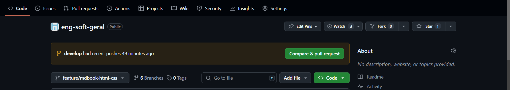
Acesse a página do seu repositório no GitHub e Selecione a opção "Pull requests" ou apenas clique em "compare & pull request caso a branch que acabou de fazer push seja a mesma que deseja incluir no PR"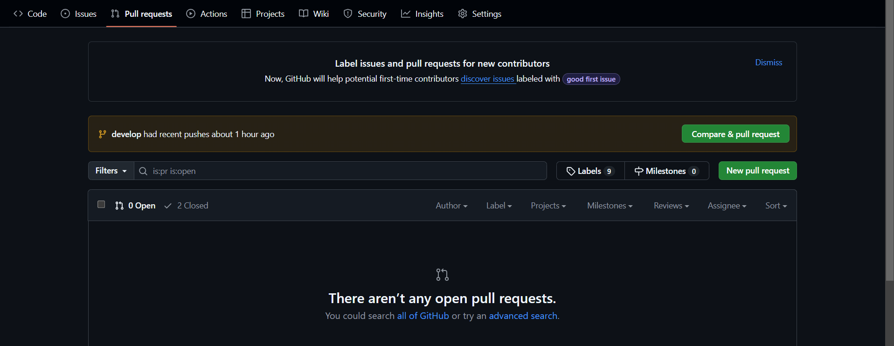
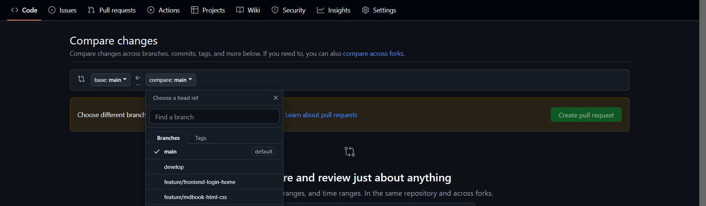
Escolha as branchs de origem e destino (geralmente o destino é main ou develop) e revise as alterações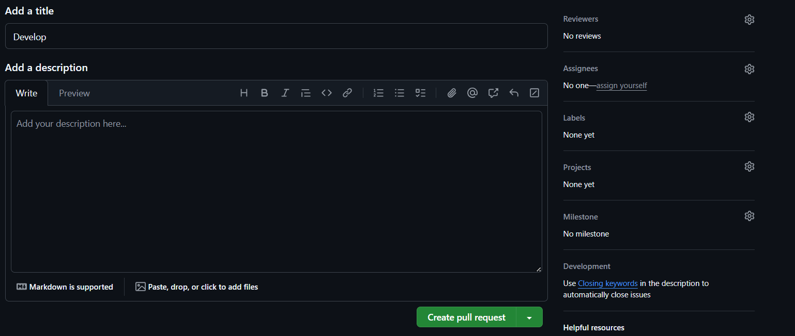
Adicione um título e uma descrição das alterações feitas para facilitar o code review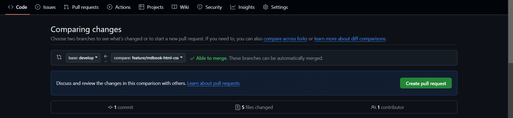
Verifique se as branch de origem e destinop estão "able to merge", se sim confirme em "create pull request" se não volte à sua IDE e resolva o(s) conflito(s) de merge3. Revisão do PR
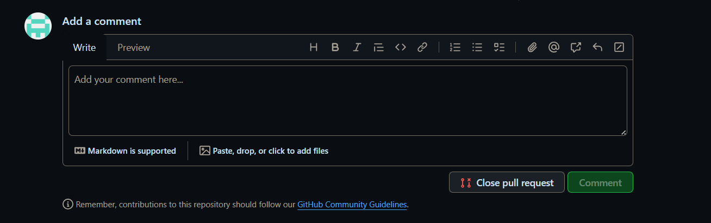
Após verificar as alterações feitas em cada commit do PR adicione seus comentários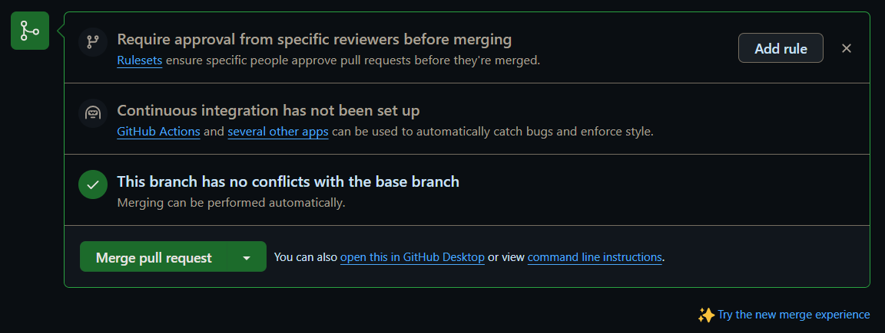
Caso tenha passado no Code Review e esteja "Able to merge" confime o merge2.2.0. Boas práticas
-
Testes Automatizados:
Inclua testes automatizados em uma pipeline de CI (Continous Integration), para evitar bugs em produção. Para isso existem ferramentas como GitHub actions, jenkins e entre outras.
-
Feedback Construtivo:
Seja claro e direto nos feedbacks, destaque o que pode melhorar e o que foi bem feito.
-
Relacionar PRs a issues:
Caso o PR seja a resolução de uma issue, destaque que há esta relação no titulo do PR, ex.: Resolves #123
2.2.1. Dicas para evitar conflitos de merge
- Antes de criar um PR, certifique-se de que sua branch está atualizada com a branch de destino
$ git pull origin <branch-de-destino>
- Se houver conflitos de merge, resolva-os em sua máquina antes de enviar o PR. Use ferramentas como git mergetool para facilitar o processo.
2.2.2. Conclusão
Com esses passos você mantém o fluxo de colaboração limpo, organizado e todo mundo sai ganhando. Bom PR!
Capítulo 2 – Code Review e Pull Request no GitHub
2.3. Code Review
Como falado anteriormente, a revisão de código (Code Review) é uma prática essencial no desenvolvimento de software, onde um programador revisa o código escrito por outro antes de sua incorporação ao projeto. O objetivo desse processo é garantir que o código esteja bem estruturado, livre de erros e alinhado com as boas práticas da equipe.
2.3.0. Por que a revisão de código é importante?
- Identifica problemas: Permite encontrar falhas e corrigir bugs antes que o código seja implantado.
- Melhora a qualidade: Mantém o código organizado e em conformidade com os padrões da equipe.
- Facilita a troca de conhecimento: Desenvolvedores compartilham experiências e aprimoram suas habilidades.
- Garante padronização: Seguir um estilo consistente facilita a manutenção do sistema.
- Promove aprimoramento contínuo: O feedback recebido contribui para o crescimento dos programadores.
2.3.1. Como nossa equipe pode revisar o código?
Não existe um único jeito “certo”, cada time adota o que funciona melhor. Veja algumas abordagens:
-
Parceria entre colegas
Dois desenvolvedores revisam o código mutuamente. Um escreve, o outro sugere melhorias na sequência. -
Revisão rápida e informal
Uma olhada rápida, sem checklist rígido. Ideal para mudanças menores. -
Revisão estruturada
Segue um passo a passo bem definido: checklist, testes, documentação do feedback. Perfeita para entregas críticas.
É importante combinar com o time quando usar cada método.
2.3.2. Conclusão
A revisão de código é essencial para o desenvolvimento de software estável, ela melhora a qualidade do código, promove a troca de conhecimento e garante que o projeto siga as melhores práticas. Neste guia, vamos explorar usando somente o GitHub, mas os conceitos são aplicáveis a qualquer ferramenta de controle de versão.
Capítulo 2 – Code Review e Pull Request no GitHub
2.4. Como realizar um Code Review eficaz no GitHub
Revisar um Pull Request (PR) pode parecer complicado, mas enxergue isso como uma conversa entre desenvolvedores. Aqui vão dicas para tornar esse bate-papo mais fluido e produtivo.
1. Antes de Começar, Entenda o Contexto
Antes de revisar um PR:
- Leia a descrição do PR com calma. Veja links para issues, requisitos ou documentação.
- Navegue pelo repositório para entender o impacto das alterações.
Assim você evita surpresas e ganha confiança no que vai revisar.
2. Aproveite as Ferramentas do GitHub
O GitHub oferece recursos que facilitam a sua vida:
- Comparação de branches, que mostra as diferenças entre o código atual e o novo.
- Visualização de commits, que te ajuda a entender a evolução do código ajuda a captar o raciocínio do autor.
- Histórico de commits, facilita a compreensão das alterações feitas.
3. O Que Observar Durante a Revisão
Enquanto percorre as mudanças, pergunte-se:
- A funcionalidade aborda o problema proposto?
- A funcionalidade foi desenvolvida seguindo as regras de negócio definida?
- Estamos seguindo os padrões de estilo do time?
- Há testes cobrindo a nova lógica e todos passam?
- Algum ponto impacta performance ou segurança?
4. Dê um Feedback Construtivo
- Seja claro e direto: Em vez de "isto está errado", explique e sugira soluções.
- Evite críticas pessoais: O foco é no código, não no autor.
- Reconheça boas soluções: Valorizar boas práticas motiva a equipe.
5. Trabalhe em Equipe
- Marque outros desenvolvedores com
@usuárioquando precisar de uma segunda opinião. - Seja flexível, pois não existe uma única maneira correta de escrever código.
6. Só Aprove Quando Tudo Estiver Correto
Antes de clicar em Merge pull request:
- Garanta que todos os pontos levantados foram resolvidos.
- Verifique se testes, documentação e dependências estão atualizados.
- Se ainda faltar algo, peça ajustes específicos em vez de reprovar tudo.
Capítulo 2 – Code Review e Pull Request no GitHub
Referências do Capítulo:
Capítulo 3 - Aplicando o GitFlow no Git e GitHub com html e css
Neste capítulo, vamos dar início à nossa rede social “Conex” usando apenas HTML e CSS. Ao longo dos capítulos deste guia,transformaremos essa rede social, até então, estática em uma aplicação funcional, seguindo as boas práticas de desenvolvimento web com PHP, JS, HTML e CSS. Mas afinal, o que são HTML e CSS?
3.0.0 HTML - Hyper Text Markup Language
HTML é como o "esqueleto" de qualquer página web. Ele define a estrutura e o conteúdo de um site, permitindo a criação de elementos como parágrafos, links, imagens, listas e muito mais. A criação destes elementos é feita apartir de tags (marcações de hiper-texto) que são interpretados pelo browser.
Quando você digita uma URL (https://www.conex.com) no navegador (cliente), ele inicia uma comunicação com o servidor onde este site está hospedado. Essa comunicação é feita usando o protocolo HTTP (HyperText Transfer Protocol) ou sua versão com criptografia SSL (HTTPS).
Requisição (Request): O navegador envia uma requisição HTTP (verbo GET) ao servidor, solicitando o recurso, neste caso, uma página HTML.
Resposta (Response): O servidor processa a requisição e envia uma resposta HTTP de volta ao browser. Essa resposta contém o código HTML da página, além de outros recursos como CSS, JavaScript, imgs, etc.
🚨 No t08-mvc abordaremos de maneira prática a arquitetura request/response na comunicação entre clientes e servidores
3.0.1 CSS - Cascading Style Sheets
CSS é responsável pela apresentação e estilo dos elementos HTML. Ele permite definir cores, fontes, tamanhos, layouts e outros aspectos visuais, garantindo que o site tenha uma aparência agradável ao usuário final.
O CSS funciona através de seletores e propriedades. Um seletor é usado para selecionar os elementos HTML que você deseja estilizar, e as propriedades definem como esses elementos devem ser estilizados.
Por exemplo, você pode usar um seletor para selecionar todos os parágrafos (<p>) em uma página e aplicar uma cor de texto e um tamanho de fonte específicos a eles.
3.1 O que é o GitFlow?
O GitFlow é uma estratégia de ramificação (branching) para gerenciar o desenvolvimento de projetos de software utilizando o Git. Criado por Vincent Driessen, o GitFlow organiza o processo de desenvolvimento em diferentes tipos de branches, o que facilita a colaboração entre equipes e o controle de versões. Ele define um conjunto de regras que especifica quando e como criar novas branches para diferentes tarefas, como desenvolvimento de novas funcionalidades, correções de bugs e lançamentos de versões.
3.1.0 Estrutura do GitFlow
A estrutura do GitFlow é composta principalmente por cinco tipos de branches:
1. master (ou main)
Contém o código estável e pronto para ser lançado em produção. Cada commit neste branch representa uma versão estável do projeto.
2. develop
Serve como o branch principal de desenvolvimento, onde as novas funcionalidades são integradas antes de serem liberadas para produção. O código no develop pode não ser 100% estável, mas deve estar funcional para testes.
3. feature
Criado a partir do develop para o desenvolvimento de novas funcionalidades. Cada funcionalidade tem seu próprio branch feature, o que facilita o trabalho isolado e sem impacto no código principal.
4. release
Utilizado para preparar o código para uma nova versão estável. O branch release é criado a partir do develop e é onde os últimos ajustes, testes e correções de bugs são feitos antes do lançamento.
5. hotfix
Criado a partir da main quando é necessário corrigir um problema crítico em produção. Depois de corrigido, o hotfix é mesclado tanto na main quanto no develop para garantir que a correção seja aplicada a ambas as versões.
3.1.1 Benefícios do GitFlow
A aplicação do GitFlow ajuda equipes a gerenciar o ciclo de vida do desenvolvimento de forma mais estruturada, evitando problemas de integração e facilitando o controle de versões.
Como Implementar o GitFlow no Git e GitHub (Somente para Windows)
Para implementar o GitFlow no Windows, você precisa seguir alguns passos específicos, desde a instalação do GitFlow até a configuração e uso em seu repositório Git. A seguir, explicamos como realizar isso:
1. Instalando o Git no Windows
Caso ainda não tenha o Git instalado, o primeiro passo é baixar e instalar o Git para Windows. Acesse o site oficial do Git e baixe a versão mais recente. Durante a instalação, é importante selecionar a opção para adicionar o Git ao PATH, para que você possa usá-lo diretamente no terminal do Windows.
2. Instalando o GitFlow no Windows
O GitFlow não é instalado automaticamente com o Git para Windows. Para instalar o GitFlow no Windows, siga os passos abaixo:
-
Baixe o GitFlow para Windows: A maneira mais simples de instalar o GitFlow no Windows é utilizando o Git Bash, que já vem com o Git para Windows.
-
Baixar e instalar o GitFlow: No Git Bash, execute o comando para instalar o GitFlow:
- Abra o Git Bash no seu computador.
- Execute o seguinte comando para baixar e instalar o GitFlow:
git clone https://github.com/nvie/gitflow.git
cd gitflow
make install
3. Inicializando o GitFlow
Após a instalação do GitFlow, você precisa inicializar o GitFlow em seu repositório Git. Para isso:
- No Git Bash, navegue até a pasta do seu projeto, onde o repositório Git está localizado. Se você ainda não inicializou o repositório, execute:
git init
- Agora, inicialize o GitFlow com o comando:
git flow init
Você será solicitado a configurar os nomes dos branches. As opções padrão são:
- Branch principal:
master(oumain) - Branch de desenvolvimento:
develop
Pressione Enter para aceitar as configurações padrão ou insira seus próprios nomes de branches, se desejar.
4. Criando Branches de Funcionalidades (feature)
Após a configuração inicial, você pode começar a criar branches de funcionalidades (feature). Para iniciar o desenvolvimento de uma nova funcionalidade, use o seguinte comando:
git flow feature start nome-da-feature
Isso criará um novo branch feature/nome-da-feature baseado no develop. Quando a funcionalidade estiver concluída, finalize o branch com:
git flow feature finish nome-da-feature
Isso mesclará o branch de funcionalidade de volta ao develop e excluirá o branch feature.
5. Criando Branches de Lançamento (release)
Quando as funcionalidades estiverem prontas para serem lançadas, crie um branch release a partir do develop com:
git flow release start v1.0.0
Esse comando criará um branch release/v1.0.0. Após realizar os ajustes finais, finalize o release com:
git flow release finish v1.0.0
Isso mesclará o release tanto na main quanto no develop, criando uma nova versão estável na main e excluindo o branch release.
6. Criando Branches de Correção (hotfix)
Se houver um bug crítico em produção, você pode criar um branch hotfix a partir da main:
git flow hotfix start v1.0.1
Após corrigir o problema, finalize o hotfix com:
git flow hotfix finish v1.0.1
Isso mesclará o hotfix de volta na main e no develop, garantindo que a correção seja aplicada a ambas as versões.
7. Subindo as Alterações para o GitHub
Sempre que você criar ou finalizar um branch de funcionalidade, release ou hotfix, é importante enviar suas alterações para o repositório remoto no GitHub. Para isso, use os seguintes comandos:
- Para o branch
mainedevelop:
git push origin main
git push origin develop
- Para branches
feature,releasouhotfix, use:
git push origin feature/nome-da-feature
git push origin release/v1.0.0
git push origin hotfix/v1.0.1
8. Gerenciando Pull Requests no GitHub
Ao trabalhar com o GitFlow, é uma boa prática criar Pull Requests (PRs) no GitHub para integrar as mudanças dos branches feature, release e hotfix ao develop ou main. Isso ajuda a revisar o código e garantir que as alterações sejam bem integradas.
Aplicando o GitFlow em um projeto com HTML e CSS
Aplicar o GitFlow em um projeto com HTML e CSS segue a mesma lógica que em outros projetos de desenvolvimento.
Passos para Aplicar o GitFlow:
1. Inicialize o Repositório Git
git init
2. Crie e Defina a Branch develop
git checkout -b develop
git push -u origin develop
3. Criação de Features
Para cada nova funcionalidade (exemplo: um novo componente HTML/CSS), crie uma branch baseada em develop:
git checkout -b feature/nova-funcionalidades
4. Desenvolvendo a feature (exemplo)
-
Estrutura do projeto

Na pasta
imgestão armazenadas todas as imagens utilizadas nesta etapa. Na pastaview, há duas subpastas: uma para os arquivosCSSe outra para os arquivosHTML(que estão no formato PHP devido a uma propriedade específica que estamos utilizando). -
Exemplo de código HTML (arquivo
home.php)
<!DOCTYPE html>
<html lang="pt-br">
<head>
<meta charset="UTF-8" />
<meta name="viewport" content="width=device-width, initial-scale=1.0" />
<title>Página Principal</title>
<link rel="stylesheet" href="../css/home.css" />
</head>
<body>
<!-- Barra Lateral -->
<?php include __DIR__ . '/side-bar.php'; ?>
<!-- Conteúdo Principal -->
<main class="container">
<!-- Seção de Posts -->
<section class="feed">
<article class="post">
<header class="user-info">
<div class="avatar" aria-label="Foto do Usuário"></div>
<span class="username">Usuário1233</span>
</header>
<div class="image-placeholder" aria-label="Imagem do Post"></div>
</article>
<hr class="divider" />
<article class="post">
<header class="user-info">
<div class="avatar" aria-label="Foto do Usuário"></div>
<span class="username">Usuário1233</span>
</header>
<div class="image-placeholder" aria-label="Imagem do Post"></div>
</article>
</section>
</main>
</body>
</html>
- Como o CSS está separado do HTML em um arquivo externo, é necessário importá-lo na página inicial. Para isso, utilizamos a seguinte tag dentro do
<head>:
<link rel="stylesheet" href="caminho-do-arquivo-css" />
- Observe que dentro do body tem:
<?php include __DIR__ . '/side-bar.php'; ?>
Esta linha utiliza include DIR para importar outro arquivo HTML, que, neste caso, é o side-bar.php. Como o projeto possui várias páginas que compartilham a mesma funcionalidade, a importação evita a duplicação de código. Assim, essa funcionalidade é carregada apenas nas páginas que precisam dela, como home.php e profile.php.
- Arquivo
side-bar.php:
<!DOCTYPE html>
<html lang="en">
<head>
<meta charset="UTF-8" />
<meta name="viewport" content="width=device-width, initial-scale=1.0" />
<title>Document</title>
<link rel="stylesheet" href="../css/side-bar.css" />
</head>
<body>
<!-- Barra Lateral -->
<aside class="side-bar">
<img src="../../img/logo.svg" alt="Logo da empresa" class="logo" />
<nav class="side-bar-links">
<a href="./home.php">
<img
src="../../img/home.svg"
class="icon"
alt="Ícone Página Principal"
/>
Página principal
</a>
<a href="">
<img src="../../img/search.svg" class="icon" alt="Ícone Pesquisar" />
Pesquisar
</a>
<a href="./profile.php">
<img src="../../img/profile.svg" class="icon" alt="Ícone Perfil" />
Perfil
</a>
</nav>
</aside>
</body>
</html>
5. Após desenvolver sua feature, faça commits e, quando finalizar, envie para o repositório remoto:
git add .
git commit -m "Novas funcionalidades"
git push origin feature/nova-funcionalidades
- Abra um Pull Request (PR) para mesclar a feature na branch develop.
6. Criação de Releases (Versões do Projeto)
- Quando for preparar uma versão para produção, crie uma branch release baseada na develop:
git checkout -b release/1.0
- Corrija pequenos ajustes e, quando estiver pronto, mescle no main e na develop:
git checkout main
git merge release/1.0
git checkout develop
git merge release/1.0
7. Correção de Bugs (Hotfixes)
- Caso um erro crítico seja encontrado na main, crie uma branch hotfix baseada nela:
git checkout -b hotfix/corrige-erro
- Após corrigir, mescle na main e na develop:
git checkout main
git merge hotfix/corrige-erro
git checkout develop
git merge hotfix/corrige-erro
- Exclua a branch hotfix:
git branch -d hotfix/corrige-erro
Boas Práticas para GitFlow com HTML e CSS
1. Nomeação de Branches
Uma nomenclatura padronizada e clara para as branches facilita a organização do código e a identificação de funcionalidade.
Boas Práticas:
-
Utilize um padrão consistente:
feature/nome-da-funcionalidade,bugfix/nome-da-correção. -
Evite nomes genéricos como
feature/alteracaoouhotfix/ajuste. -
Use
kebab-caseousnake_casepara evitar espaços (exemplo:feature/responsive-navbarouhotfix/footer_bug).
Exemplo de criação de branch:
git checkout -b feature/menu-responsivo
2. Commits Claros e Objetivos
Escrever mensagens de commit bem estruturadas facilita a compreensão das alterações feitas no projeto.
Boas Práticas:
-
Seja descritivo e direto: uma boa mensagem de commit resume a mudança de forma clara.
-
Utilize o tempo verbal correto: mensagens no imperativo são recomendadas (
Adiciona,Corrige,Remove). -
Prefira commits pequenos e frequentes ao invés de um grande commit com muitas alterações.
Exemplos de mensagens de commit boas:
-
Adiciona estilo responsivo ao menu -
Corrige bug no layout do footer em telas menores
3. Uso de Pull Requests para Revisão
Os Pull Requests (PRs) no GitHub permitem que alterações sejam revisadas antes de serem incorporadas à branch principal.
Boas Práticas:
-
Sempre crie um PR ao finalizar uma feature, release ou hotfix.
-
Utilize uma descrição detalhada no PR para explicar as mudanças.
-
Marque membros da equipe para revisão antes de aprovar a fusão.
Exemplo de PR bem documentado:
Título: "Adiciona layout responsivo ao menu de navegação"Descrição:
-
Adiciona media queries para tornar o menu responsivo.
-
Corrige alinhamento do logo e espaçamento dos itens.
-
Testado em dispositivos móveis e desktop.
4. Separação de Código HTML, CSS e JS
Uma estrutura organizada do projeto facilita a manutenção e reutilização do código.
Boas Práticas:
-
Utilize pastas organizadas (
/css,/js,/img). -
Não misture CSS inline no HTML, prefira arquivos externos.
-
Use uma estrutura modular (exemplo:
style.csspara estilos gerais enavbar.csspara estilos específicos do menu).
Exemplo de estrutura recomendada:
/projeto
│── index.html
│── /css
│ │── style.css
│ │── navbar.css
│── /js
│ │── script.js
│── /img
│ │── logo.png
5. Testes Antes de Fazer Merge
Antes de mesclar uma branch ao develop ou main, é fundamental testar o código para evitar bugs.
Boas Práticas:
-
Testar localmente antes de enviar um PR.
-
Verificar compatibilidade em diferentes navegadores.
-
Certificar-se de que o CSS não está quebrando o layout.
Documentação
Para aprofundar os conhecimentos sobre GitFlow, Git e boas práticas no desenvolvimento de projetos com HTML e CSS, é recomendável consultar materiais adicionais.
Documentação Oficial do Git
Documentação do GitFlow
Documentação do GitHub
Boas Práticas em Desenvolvimento com HTML e CSS
Boas práticas recomendadas pelo Google para desenvolvimento web moderno e otimização de desempenho.
Capítulo 4 - Introdução ao PHP Básico aplicando GitFlow no GitHub
4.0. Introdução ao PHP Básico aplicando GitFlow no GitHub
4.0.1. O que é PHP?
O PHP (Hypertext Preprocessor) é uma linguagem de programação de código aberto voltada para o desenvolvimento web. Criado originalmente por Rasmus Lerdorf em 1994, o PHP permite a criação de páginas dinâmicas e interativas, sendo amplamente utilizado em conjunto com HTML e bancos de dados como MySQL.
4.0.2. Características do PHP
-
Execução no Servidor: O PHP é processado no servidor, gerando uma página HTML que é enviada ao navegador. Isso significa que o código PHP não aparece no navegador do usuário, apenas o HTML gerado por ele.
-
Integração com HTML: PHP pode ser embutido diretamente no HTML. Isso permite criar páginas dinâmicas com facilidade. Exemplo: Em um sistema de comentários, você pode usar PHP para exibir os comentários armazenados em um banco de dados.
-
Suporte a Vários Bancos de Dados: Compatível com MySQL, PostgreSQL, SQLite, entre outros.
-
Ampla Comunidade: PHP tem uma comunidade enorme que oferece suporte, bibliotecas e frameworks, tornando o desenvolvimento muito mais ágil. Exemplo: A biblioteca Composer facilita a instalação de pacotes externos, e frameworks como Laravel ajudam a construir aplicações mais rápidas e seguras.
Sintaxe Básica do PHP
O PHP pode ser inserido dentro do código HTML utilizando as tags:
<?php ... ?>.
Exemplo de um script básico:
<!DOCTYPE html>
<html>
<head>
<title>Exemplo PHP</title>
</head>
<body>
<h1><?php echo "Hello, World!"; ?></h1>
</body>
</html>
Nesse exemplo, o PHP processa o comando echo e insere "Hello, World!" na página HTML.
Exemplos de Comandos Básicos no PHP
- Variáveis e Tipos de Dados:
<?php
$nome = "João"; // string
$idade = 30; // inteiro
$altura = 1.75; // float
$ativo = true; // booleano
?>
- Estruturas Condicionais:
<?php
$idade = 20;
if ($idade >= 18) {
echo "Você é maior de idade.";
} else {
echo "Você é menor de idade.";
}
?>
- Laços de Repetição:
<?php
// Laço for
for ($i = 0; $i < 5; $i++) {
echo "Número: $i <br>";
}
// Laço while
$i = 0;
while ($i < 5) {
echo "Número: $i <br>";
$i++;
}
// Laço foreach
$nomes = ["João", "Maria", "José"];
foreach ($nomes as $nome) {
echo "Nome: $nome <br>";
}
// foreach para array chave-valor
$user = ["id" => 1, "name" => "name", "password" => "123456"]
foreach ($user as $key => $value){
echo "dados do usuário:" . $value;
}
?>
Convenções de Nomenclatura no PHP moderno
Seguindo as PSRs (PHP Standards Recommendations) como PSR-1, PSR-2 e PSR-12, aqui estão as convenções recomendadas e que usaremos no desenvolvimento do projeto:
Tabela de Convenções
| Elemento | Convenção | Exemplo |
|---|---|---|
| Classes | PascalCase | UserController |
| Interfaces | "I" + PascalCase | ILogger |
| Traits | PascalCase + "Trait" | SingletonTrait |
| Métodos | camelCase | getUserById() |
| Variáveis | camelCase | $userId |
| Parâmetros | camelCase | function setUserName($userName) |
| Constantes | UPPER_SNAKE_CASE | const MAX_USERS = 100; |
| Arquivos/Classes | PascalCase.php | UserController.php |
| Funções globais | snake_case (evitar) | function array_map_recursive() |
Como instalar o PHP no Windows
Baixar o PHP
-
Acesse o site oficial do PHP: https://windows.php.net/download.
-
Baixe a versão Thread Safe compatível com seu sistema (x64 para 64 bits ou x86 para 32 bits).
-
Baixe o arquivo ZIP e extraia-o para um diretório, como
C:\php.
Configurar as Variáveis de Ambiente
-
Vá em variáveis do sistema, localize a variável
Pathe clique em Editar. -
Clique em Novo e adicione o caminho da pasta do PHP.
-
Clique em OK para salvar.
Configurar o php.ini
-
Vá até a pasta do PHP.
-
Copie o arquivo
php.ini-developmente renomeie paraphp.ini. -
Abra o arquivo
php.inicom o Bloco de Notas e descomente (remova o;antes de) algumas extensões essenciais:
extension=mysqli
extension=pdo_mysql
extension=mbstring
extension=curl
extension=openssl
- Salve o arquivo.
Testar a Instalação
- Abra o Prompt de Comando (CMD) e digite:
php -v
- Se o PHP estiver instalado corretamente, você verá a versão exibida.
O que é XAMPP?
O XAMPP é um ambiente de desenvolvimento integrado e multiplataforma, projetado para facilitar a criação, teste e implantação de aplicações web em um servidor local. Ele é amplamente utilizado por desenvolvedores, analistas de sistemas e profissionais de TI para simular um ambiente de produção em suas máquinas locais, permitindo o desenvolvimento e a validação de projetos web antes de sua publicação em servidores remotos.
Aplicações do XAMPP
O XAMPP é utilizado para:
-
Desenvolvimento de aplicações web: Permite criar e testar sites dinâmicos, sistemas de gerenciamento de conteúdo (CMS), e-commerce e outras aplicações baseadas em PHP, MySQL e Apache.
-
Testes locais: Simula um ambiente de servidor web completo, permitindo a execução de scripts, testes de banco de dados e validação de funcionalidades sem a necessidade de um servidor externo.
-
Prototipagem rápida: Facilita a criação de protótipos funcionais de aplicações web, reduzindo o tempo de desenvolvimento.
-
Aprendizado e treinamento: É uma ferramenta essencial para estudantes e profissionais que estão aprendendo desenvolvimento web, administração de servidores ou gerenciamento de bancos de dados.
-
Ambiente de staging: Permite a configuração de um ambiente de homologação local para testes finais antes da implantação em produção.
Vantagens do XAMPP
-
Portabilidade: É multiplataforma e pode ser executado em diferentes sistemas operacionais.
-
Facilidade de uso: Vem pré-configurado, eliminando a necessidade de configurações manuais complexas.
-
Gratuito e de código aberto: Não há custos associados à sua utilização.
-
Integração de ferramentas: Inclui todos os componentes necessários para um ambiente de desenvolvimento web completo.
Exemplo Prático: Configurando ambiente XAMPP
A configuração correta de um servidor e banco de dados é essencial para o funcionamento de qualquer sistema de software. Neste exemplo prático, vamos demonstrar como configurar um ambiente de desenvolvimento local utilizando XAMPP para o servidor e MySQL para o banco de dados.
Instalação e Configuração do XAMPP
-
Baixe e instale o XAMPP no site oficial: https://www.apachefriends.org/pt_br/download.html
-
Inicie o Painel de Controle do XAMPP e ative os serviços Apache e MySQL.
-
Verifique a instalação acessando
http://localhostno navegador.
Se ocorrer um erro ao iniciar o MySQL no XAMPP, acesse o painel de controle e encerre o processo do MySQL antes de tentar novamente.
Criação e Configuração do Banco de Dados com XAMPP
-
Acesse o phpMyAdmin via
http://localhost/phpmyadmin/, ou utilize oMySQL Workbenchcomo alternativa. -
Crie um novo banco de dados chamado
conex(vamos usar o exemplo do nosso projeto). -
Execute o seguinte SQL para criar uma tabela de usuários:
CREATE TABLE users (
id SERIAL PRIMARY KEY,
email VARCHAR(255) UNIQUE NOT NULL,
phone VARCHAR(15) UNIQUE,
password_hash VARCHAR(255) NOT NULL,
username VARCHAR(255) NOT NULL,
bio TEXT
);
O que é Docker?
Docker é uma ferramenta que permite "empacotar" aplicações em contêineres a partir de um arquivo "Dockerfile", isolando dependências e ambientes. Isso facilita a implantação e distribuição em diferentes sistemas, pois cada contêiner contém tudo que a aplicação precisa para rodar, mas o que exatamente é um contêiner Docker?
Contêiner Docker
Já ouviu a frase: "Mas na minha máquina o código funciona"? então, times que desenvolvem com Docker não passam por problemas como esse, pois com essa ferramenta, o desenvolvedor é capaz de encapsular a aplicação e todas as dependências necessárias para o seu funcionamento , incluindo o sistema operacional em um contêiner isolado, tornando o ambiente de desenvolvimento único para todos os desenvolvedores, prevenindo bug relacionado a mudança de sistema operacional ou versão das dependências utilizadas.
Para quem já trabalhou com o framework Django, é semelhante a criar um “virtual environment” na pasta “venv”. Porém, um contêiner Docker vai além, ele não apenas isola dependências, mas também o ambiente de execução, e também partes do sistema operacional e configurações, tornando o isolamento ainda maior.
DockerHub
DockerHub é um serviço de hospedagem de imagens Docker, semelhante, em algumas partes, ao GitHub. É um repositório onde são armazenadas, versionadas e compartilhadas as imagens de contêiner, permitindo que usuários façam pull (baixem) e push (publiquem) suas imagens em um repositório central.
Imagem é o molde que define como o container será criado. Fazendo uma alusão à orientação a objetos, o container gerado apartir da imagem seria como um objeto e a imagem uma classe
Exemplo:
Uma imagem Docker para um servidor web (como nginx:latest) pode ser usada para criar múltiplos contêineres, cada um rodando de forma independente, assim como uma classe pode ser instanciada em múltiplos objetos.
Docker Compose
O Docker Compose é uma ferramenta que permite definir e gerenciar vários contêineres, e as imagens que os originam, em um único arquivo YAML, chamado "docker-compose.yml". Em vez de executar cada contêiner individualmente, basta declarar todos os serviços necessários (por exemplo, um banco de dados, um servidor web ou uma aplicação) e então executar um único comando, para levantar todo o ambiente de forma coordenada, oque facilita o setup e manutenção do ambiente unificado.
Principais comandos Docker
# Lista os contêineres em execução
docker ps
# Lista todos os contêineres (em execução e parados)
docker ps -a
# Executa um novo contêiner a partir de um Dockerfile
docker run
# Cria e inicia os contêineres em modo desanexado (background), reconstruindo se necessário
docker-compose up --build -d
# Encerra e remove os contêineres e redes criados
docker-compose down
# Para os contêineres sem removê-los
docker-compose stop
# Reinicia contêineres que foram parados
docker-compose start
# Para construir uma imagem Docker a partir de um Dockerfile
docker build -t nome-da-imagem .
# Executa um novo contêiner a partir de uma imagem
docker run -d -p 8080:80 nome-da-imagem
# Para acessar o terminal dentro de um contêiner em execução
docker exec -it <container_name> bash
# Para parar um contêiner
docker stop <container_name>
# Para remover um contêiner
docker rm <container_name>
# Para ver os logs de um contêiner
docker logs <container_name>
# Para visualizar opções gerais do Docker
docker
Observação
Em alguns sistemas operacionais, o comando correto édocker composeem vez dedocker-compose.
Exemplo Prático: Configurando ambiente Docker
Criação e Configuração do Banco de Dados
services:
db:
image: postgres:15-alpine
container_name: conex_db_t04
environment:
POSTGRES_USER: admin
POSTGRES_PASSWORD: root
POSTGRES_DB: conex
ports:
- "5432:5432"
volumes:
- postgres_data:/var/lib/postgresql/data
- ./init_db.sql:/docker-entrypoint-initdb.d/init_db.sql
web:
container_name: conex_web_t04
build: .
ports:
- "8080:80"
volumes:
- .:/var/www/html
depends_on:
- db
pgadmin:
image: dpage/pgadmin4:8.11.0
ports:
- 5050:80
environment:
- PGADMIN_DEFAULT_EMAIL=admin@mail.com
- PGADMIN_DEFAULT_PASSWORD=root
depends_on:
- db
volumes:
postgres_data:
-
Inicialize o docker deamon (no windows basta abrir o Docker Desktop)
-
No terminal do diretório raiz projeto (onde está localizado o docker-compose.yml) suba o container com o comando "docker-compose up --build -d"
-
use o comando "docker exec -it <container_name> bash" para acessar o terminal dentro de um contêiner em execução
-
no bash do container use o comando psql -U <POSTGRES_USER> -d <POSTGRES_DB> para abrir o terminal do psql
-
Copie o conteúdo do arquivo "db.sql" para o terminal do psql, que automaticamente serão criadas as tabelas do banco
CREATE TABLE users (
id SERIAL PRIMARY KEY,
email VARCHAR(255) UNIQUE NOT NULL,
phone VARCHAR(15) UNIQUE,
password_hash VARCHAR(255) NOT NULL,
username VARCHAR(255) NOT NULL,
bio TEXT
);
Services (Serviços)
Dentro de um arquivo docker-compose.yml, cada “service” representa um contêiner. Por exemplo:
- db na configuração acima representa um contêiner com banco de dados PostgreSQL.
- pgadmin representa um contêiner que roda a interface web pgAdmin.
Cada serviço define qual imagem Docker será usada, variáveis de ambiente, portas que serão expostas, volumes para persistência de dados e dependências de outros serviços.
Fazendo novamente uma analogia ao paradigma de orientação a objetos, o service "db" instancia a "classe" "postgres:15-alpine" e modifica seus "atributos": POSTGRES_USER, POSTGRES_PASSWORD, POSTGRES_DB, ports, volumes.
Volumes
Volumes permitem que você mantenha os dados salvos entre reinicializações dos contêineres. Sem volumes, os dados seriam perdidos toda vez que o contêiner fosse parado ou recriado. Ao configurar “volumes”, o Docker mapeia um diretório interno do contêiner para uma pasta ou volume persistente na máquina host, garantindo que as informações sejam preservadas.
Docker no contexto do projeto
No docker-compose.yml:
• serviço “db”:
- Usa a imagem postgres:15-alpine (versão mais leve do PostgreSQL).
- Define variáveis de ambiente (usuário, senha e nome do banco).
- Expõe a porta 5432 para que outras aplicações possam fazer um bind nessa porta, e se conectar com o servidor do banco postgres.
- Suporta um volume para persistir os dados.
• serviço “pgadmin”:
- Usa a imagem dpage/pgadmin4 para gerenciar o banco via interface visual no navegador.
- Redireciona a porta 80 do contêiner para a 5050 no host, ou seja,
- Define variáveis de ambiente de login e senha do pgAdmin.
- Cria uma dependência com o serviço “db”, ou seja, o contêiner pgAdmin só sobe quando “db” estiver disponível.
Desse modo o banco de dados e a interface de gerenciamento são definidos em um único arquivo de configuração (YAML), facilitando a manutenção, escalabilidade e portabilidade do seu projeto.
Outra forma
Uma alternativa à configuração direta no docker-compose.yml é criar um Dockerfile para encapsular a aplicação e, em seguida, referenciá-lo no docker-compose.yml. Isso é útil quando você precisa personalizar a imagem Docker da aplicação.
Arquivo Dockerfile:
FROM php:5.6-apache
# instala as dependências do PHP: mbstring, pdo, pdo_mysql e pdo_pgsql
RUN apt-get update && apt-get install -y libpq-dev && rm -rf /var/lib/apt/lists/* \ && docker-php-ext-install mbstring pdo pdo_mysql pdo_pgsql
# instala o módulo de reescrita de URL do Apache
RUN a2enmod rewrite
# copia o código-fonte da aplicação para o diretório raiz do servidor web
# fazer um COPY . /var/www/html/ necessitaria de um Dockerignore, pois copia arquivos desnecessários
COPY public/ /var/www/html/
COPY src/ /var/www/html/src/
COPY view/ /var/www/html/view/
# define o diretório raiz do servidor web
WORKDIR /var/www/html
# expõe a porta 80 do contêiner para o host (necessário para acessar a aplicação via navegador)
EXPOSE 80
# define o comando que será executado quando o contêiner for iniciado
CMD ["apache2-foreground"]
Arquivo docker-compose.yml:
php:
build: . # usa o Dockerfile do diretório atual
container_name: php
ports:
- "80:80"
volumes:
- ./src:/var/www/html
depends_on:
- db
Conex - tópico 04
Tarefas:
- Criar conexão com banco de dados via PDO
- Implementar backend da view "signup.php"
Funcionalidade:
- Cadastro de usuários no sistema
Visão do usuário
Cadastro de usuários no sistema
- Como um usuário visitante, quero preencher um formulário de cadastro fornecendo minhas informações (nome, e-mail, senha, telefone), para que eu possa criar uma conta no sistema e acessar todas as funcionalidades exclusivas para usuários cadastrados.
Cadastro de usuários no sistema
Criar conexão com banco de dados via PDO (exemplo do projeto conex)
Arquivo: t04-db/database.php
class Database
{
private static $instance = null;
private $conn;
private function __construct()
{
$config = require __DIR__ . '/config.php';
if (!isset($config['database']['host'], $config['database']['port'], $config['database']['username'], $config['database']['password'], $config['database']['dbname'])) {
throw new Exception("Configuração do banco de dados incompleta");
}
$dsn = "mysql:host={$config['database']['host']};port={$config['database']['port']};dbname={$config['database']['dbname']};charset=utf8mb4";
try {
$this->conn = new PDO($dsn, $config['database']['username'], $config['database']['password'], [
PDO::ATTR_ERRMODE => PDO::ERRMODE_EXCEPTION,
PDO::ATTR_DEFAULT_FETCH_MODE => PDO::FETCH_ASSOC
]);
} catch (PDOException $e) {
throw new Exception("Falha na conexão com o banco de dados: " . $e->getMessage());
}
}
public static function getInstance()
{
if (self::$instance === null) {
self::$instance = new self();
}
return self::$instance;
}
public function getConnection()
{
return $this->conn;
}
}
Código responsável por estabelecer a conexão com o banco de dados.
No exemplo apresentado, a classe "Database" é implementada utilizando o design pattern "Singleton". Esse pattern tem como objetivo garantir que exista apenas uma instância da classe durante o tempo de execução da aplicação, facilitando o gerenciamento e o reuso da conexão com o banco de dados.
Observações
$config = require __DIR__ . '/config.php';
Aqui, o código carrega um arquivo chamado config.php que contém as configurações do banco de dados.
if (!isset($config['database']['host'], $config['database']['port'], $config['database']['username'], $config['database']['password'], $config['database']['dbname'])) {
throw new Exception("Configuração do banco de dados incompleta");
}
Aqui, o código verifica se todas as chaves necessárias (host, port, username, password, dbname) existem no array $config['database'].
$dsn = "mysql:host={$config['database']['host']};port={$config['database']['port']};dbname={$config['database']['dbname']};charset=utf8mb4";
O DSN é a string usada pelo PDO para conectar ao banco de dados.
Host (host), Porta (port), Nome do banco (dbname), Charset (utf8mb4)
try {
$this->conn = new PDO($dsn, $config['database']['username'], $config['database']['password'], [
PDO::ATTR_ERRMODE => PDO::ERRMODE_EXCEPTION,
PDO::ATTR_DEFAULT_FETCH_MODE => PDO::FETCH_ASSOC
]);
} catch (PDOException $e) {
throw new Exception("Falha na conexão com o banco de dados: " . $e->getMessage());
}
Aqui, o código tenta criar uma conexão com o banco de dados usando a classe PDO.
Arquivo: t04-db/config.php
<?php
return [
'database' => [
'host' => 'localhost',
'port' => '3306',
'username' => 'root',
'password' => '',
'dbname' => 'conex'
]
];
🚨 Para usuários de XAMPP:
- Teste e Validação:
- Salve o arquivo
database.phpno diretório do seu servidor (htdocs no XAMPP).- Acesse
http://localhost/database.phpno navegador.- Caso a conexão seja bem-sucedida, a página ficará em branco.
Implementar backend da view "signup.php" (exemplo do projeto conex)
Arquivo: t04-db\view\signup.php
<form class="form-group" method="POST" action="../src/post-user.php">
<div class="icon">
<img src="../public/img/logo.svg" alt="logo" class="logo" />
</div>
<!-- resto do código... -->
Com esssa alteração o form de cadastro agora está referenciado ao codigo de controle de cadastro de usuários, seguido do verbo http POST
Arquivo: Arquivo: t04-db\src\post-user.php
<?php
require_once __DIR__ . '/../database.php';
require_once __DIR__ . '/users.php';
if ($_SERVER["REQUEST_METHOD"] == "POST") {
$name = trim($_POST['name']);
$phone = trim($_POST['phone']);
$email = trim($_POST['email']);
$password = $_POST['password'];
$password_confirm = $_POST['password-confirm'];
if (empty($name) || empty($phone) || empty($email) || empty($password) || empty($password_confirm)) {
$_SESSION['error'] = "Todos os campos são obrigatórios!";
header("Location: /view/signup.php?error=todos-os-campos-obrigatorios");
exit();
}
if (!filter_var($email, FILTER_VALIDATE_EMAIL)) {
$_SESSION['error'] = "Email inválido!";
header("Location: /view/signup.php?error=email-invalido");
exit();
}
if ($password !== $password_confirm) {
$_SESSION['error'] = "As senhas não coincidem!";
header("Location: /view/signup.php?error=confirmação-de-senha-diferente");
exit();
}
$database = Database::getInstance();
$users = new Users($database);
if ($users->checkEmailExists($email)) {
$_SESSION['error'] = "Este email já está registrado!";
header("Location: /view/signup.php?error=email-ja-registrado");
exit();
}
$password_hash = password_hash($password, PASSWORD_ARGON2I);
if ($users->createUser($name, $email, $password_hash, $phone)) {
$_SESSION['success'] = "Usuário cadastrado com sucesso!";
header("Location: /");
exit();
} else {
$_SESSION['error'] = "Erro ao cadastrar o usuário!";
header("Location: /view/signup.php?error=erro-ao-cadastrar-usuario");
exit();
}
}
Aqui, o código processa o formulário de cadastro de usuários (signup.php) enviado via método POST. Ele valida os dados recebidos, verifica se o e-mail já está cadastrado, cria um novo usuário no banco de dados e redireciona o usuário com mensagens de sucesso ou erro.
O objetivo principal deste código é:
-
Processar o formulário de cadastro de usuários.
-
Validar os dados fornecidos pelo usuário (campos obrigatórios, formato de e-mail, confirmação de senha).
-
Verificar se o e-mail já está cadastrado no banco de dados.
-
Criar um novo usuário no banco de dados com os dados fornecidos.
-
Redirecionar o usuário com feedback adequado (sucesso ou erro).
Arquivo: t04-db\src\users.php
class Users
{
private $db;
public function __construct(Database $db)
{
$this->db = $db->getConnection();
}
public function createUser($username, $email, $password, $phone)
{
$sql = "INSERT INTO users (username, email, password_hash, phone) VALUES (:username, :email, :password_hash, :phone)";
$stmt = $this->db->prepare($sql);
return $stmt->execute([
':username' => $username,
':email' => $email,
':password_hash' => $password,
':phone' => $phone
]);
}
public function checkEmailExists($email)
{
$sql = "SELECT id FROM users WHERE email = :email";
$stmt = $this->db->prepare($sql);
$stmt->execute([':email' => $email]);
return $stmt->fetch() ? true : false;
}
}
Aqui, o código define uma classe chamada Users que tem como objetivo gerenciar operações relacionadas a usuários no banco de dados, especificamente a criação de novos usuários e a verificação se um e-mail já está cadastrado.
Conclusão
Este tópico abordou de maneira prática a criação, conexão e cadastro de um usuário em um banco de dados.
O exemplo demonstrou como configurar a conexão ao banco de dados utilizando PDO no PHP, garantindo que a comunicação entre o servidor e o banco seja segura e eficiente. Além disso, o código abordou o processo de cadastro de um novo usuário, incluindo validações de entrada, como a verificação de e-mail e confirmação de senha, bem como a utilização de hashing para armazenamento seguro da senha no banco de dados.
Boas Práticas para Desenvolvimento PHP com GitFlow
O uso de GitFlow em projetos PHP ajuda a estruturar o desenvolvimento de forma organizada e colaborativa. No entanto, para garantir um fluxo de trabalho eficiente, é essencial adotar boas práticas que mantenham o código padronizado, seguro e funcional.
Organização do Código PHP no Repositório
Estrutura recomendada:
/project-root
│── app/ # Código principal do aplicativo
│── config/ # Arquivos de configuração
│── public/ # Pasta pública, incluindo index.php
│── resources/ # Views, assets, templates
│── tests/ # Testes unitários e funcionais
│── vendor/ # Dependências do Composer
│── .env.example # Exemplo do arquivo de variáveis de ambiente
│── composer.json # Dependências do projeto
│── README.md # Documentação do projeto
Manter um README atualizado também é essencial para que novos desenvolvedores compreendam rapidamente o projeto.
Assim como foi explicado sobre a aplicação do GitFlow com HTML e CSS, o processo em PHP segue a mesma lógica:
- Criação das branches
mainedevelop. - Desenvolvimento de
features. - Criação de
releases. - Aplicação de
hotfixes. - Realização de
pull requests.
Como aplicar o GitFlow.
Documentação
Abaixo estão alguns links para aprofundar seus conhecimentos desse tópico.
Manual do php
Tudo sobre o Xampp
MySQL
Instalação
Docker (Windows) Docker (Ubuntu)
Sessões de usuário no navegador
As sessões são um mecanismo do site que permitem que os servidores lembrem de informações sobre um usuário ao longo de várias telas, mesmo em um ambiente onde cada requisição HTTP é, por si só, independente e stateless.
Conceito de sessão
-
Persistência de estado:
Sessões permitem que uma experiência personalizada seja mantida enquanto o usuário navega por diferentes páginas de um site, armazenando informações como autenticação, preferências e dados de interação. -
ID Único:
Quando o usuário acessa um site, o servidor gera um ID para essa sessão. Esse identificador é usado para associar futuros requests a um conjunto específico de dados armazenados no servidor.
Obs: O que é "estado" no contexto de aplicações web? Com "estado" nos referimos às informações que indicam a situação atual de um usuário ou de uma aplicação em um dado momento. Basicamente, é o conjunto de dados que o sistema lembra sobre os usuários enquanto eles navegam no site.
Como funcionam no navegador
-
Criação e armazenamento de sessão:
Ao acessar um site, o servidor cria uma sessão para o usuário e envia um identificador único de sessão para o navegador. Esse identificador é geralmente armazenado em um cookie. -
Envio Automático do Cookie:
Toda vez que você interage com o site, clicando em um link ou preenchendo um formulário, o navegador envia o cookie junto com a requisição. O servidor usa o identificador do cookie para acessar ou atualizar a sessão e assim ajustar as informações conforme suas ações. -
Atualização do estado:
Toda vez que o usuário interage com o site (clicando em links, submetendo formulários etc.), o navegador envia o cookie contendo o identificador. O servidor utiliza esse identificador para acessar ou atualizar os dados da sessão, garantindo uma experiência personalizada e a persistência dos estados. -
Segurança dos Cookies:
Os cookies de sessão podem contar com atributos comoHttpOnly(impede que scripts no navegador acessem o cookie, evitando ataques como o XSS) eSecure(permite que o cookie seja enviado em conexões HTTPS), que ajudam a proteger o seu conteúdo contra ataques e asseguram que os dados só sejam transmitidos através de conexões seguras.
Conclusão
Imagine que você entra em uma biblioteca onde o garçom te entrega um crachá com um número único (seu ID de sessão). Cada vez que você pede um livro (faz uma requisição), você mostra o crachá. Assim, o bibliotecário sabe quais livros você já pegou ou se você tem alguma restrição. No nosso caso, o navegador usa um cookie com o ID da sua sessão para que o servidor lembre de você sempre que visitá-lo.
Este mecanismo de sessões torna possível que, mesmo que o HTTP não lembre de nada entre as requisições (seja stateless), o site possa manter uma experiência personalizada e contínua para cada usuário.
Sessões em PHP
O que são sessões em PHP?
Uma sessão no PHP, assim como visto no tópico anterior, é uma maneira de armazenar dados temporários enquanto o usuário navega entre as páginas de um site. A sessão é iniciada no servidor e um identificador único é gerado para cada usuário. Este identificador é armazenado no navegador como um cookie por exemplo, permitindo que o PHP associe o usuário a uma sessão específica em futuras requisições.
Como iniciar uma sessão com PHP
Para utilizar sessões em PHP, você deve iniciar a sessão com a função session_start(). Essa função deve ser chamada no início de cada página PHP onde você deseja acessar ou manipular os dados da sessão. Lembre-se de que session_start() deve ser chamada antes de qualquer saída HTML ou echo, caso contrário, ocorrerá um erro.
<?php
session_start();
?>
Armazenando dados na sessão com PHP
Após iniciar a sessão, você pode armazenar dados utilizando a superglobal $_SESSION, que é um array associativo. Isso permite que você guarde qualquer tipo de dado durante a sessão, como informações do usuário, configurações, preferências, entre outros.
Exemplo:
$_SESSION['user_id'] = 123; // Armazena o ID do usuário
$_SESSION['username'] = 'Joao'; // Armazena o nome de usuário
Esses dados ficam acessíveis em qualquer página onde a sessão esteja iniciada.
Acessando dados da sessão com PHP
Você pode acessar os dados armazenados na sessão utilizando a superglobal $_SESSION. Quando você armazena um valor, basta referenciá-lo pelo nome da chave definida.
Exemplo:
echo 'ID do usuário: ' . $_SESSION['user_id'];
echo 'Nome de usuário: ' . $_SESSION['username'];
Esses valores estarão disponíveis enquanto a sessão estiver ativa.
Modificando dados da sessão com PHP
Os dados armazenados na sessão podem ser modificados a qualquer momento. Basta atribuir um novo valor à chave correspondente na superglobal $_SESSION.
Exemplo:
$_SESSION['username'] = 'Maria'; // Modificando o nome de usuário
Destruindo a sessão com PHP
Quando você não precisa mais dos dados da sessão ou quando o usuário sai da aplicação, você pode destruir a sessão. Isso pode ser feito de duas formas
- Limpar todos os dados da sessão: A função
session_unset()remove todas as variáveis de sessão.
session_unset(); // Limpa todos os dados da sessão
- Destruir a sessão completamente: A função session_destroy() encerra a sessão e apaga os dados no servidor. No entanto, ela não apaga as variáveis de sessão imediatamente, por isso é comum utilizar session_unset() antes de chamar session_destroy().
session_destroy(); // Destroi a sessão completamente
Gerenciamento de tempo de sessão com PHP
O PHP permite controlar o tempo de vida da sessão, tanto no lado do servidor quanto no lado do usuário.
- Tempo de expiração da sessão: Para definir o tempo de expiração da sessão, você pode configurar a diretiva
session.gc_maxlifetimeno arquivophp.in. Essa configuração determina por quanto tempo os dados da sessão podem ficar armazenados no servidor antes de serem considerados expirados.
No PHP, também é possível configurar a expiração por meio do código, alterando as configurações da sessão:
ini_set('session.gc_maxlifetime', 3600); // Define 1 hora como tempo de expiração
- Controle de tempo no lado do cliente: O PHP armazena o identificador da sessão no cliente por meio de um cookie. Você pode configurar o tempo de expiração deste cookie utilizando
session.cookie_lifetime.
ini_set('session.cookie_lifetime', 3600); // Expiração do cookie em 1 hora
Quando se trabalha com sessões, é importante implementar medidas de segurança para evitar ataques como fixação de sessão (session fixation) ou roubo de sessão. Algumas boas práticas incluem:
- Regeneração do ID da sessão: A cada novo login ou ação importante, é recomendado regenerar o ID da sessão para dificultar a captura de uma sessão antiga ou comprometida.
session_regenerate_id(true); // Regenera o ID da sessão
- Uso de cookies seguros: Para garantir que o cookie da sessão seja enviado apenas por conexões seguras (HTTPS), ative a opção
session.cookie_securenophp.ini.
Conclusão
As sessões são um recurso fundamental em PHP para armazenar e gerenciar informações durante a navegação do usuário. Elas são amplamente utilizadas para funcionalidades como autenticação de usuários, preferências de navegação e manutenção de dados entre páginas. Com o uso adequado das funções de sessão, você pode garantir uma experiência de usuário eficiente e segura.
Conex - tópico 05
Tarefas:
- Implementar Backend para autenticação de usuários registrados.
Funcionalidades:
- Login no sistema
Visão do usuário
Login no sistema
- Como um usuário cadastrado, quero preencher o formulário de login, para que eu me autenticar no sistema e acessar todas as funcionalidades exclusivas para usuários logados.
Login no sistema (exemplo do nosso projeto conex)
Nosso exemplo será composto por três páginas principais:
-
login.php: Página onde o usuário insere suas credenciais (email de usuário e senha). -
profile.php: Página restrita, acessada somente após o login bem-sucedido. -
login-user.php: Página responsável por processar os dados de login.
Vamos utilizar a conexão e a tabela users criada no exemplo de configuração do servidor e banco de dados.
Página de Login (login.php)
Na página de login, o usuário será solicitado a inserir seu email de e senha. Se as credenciais estiverem corretas, o sistema iniciará uma sessão e redirecionará o usuário para a página restrita (profile.php), se não será redirecionado novamente para o login.php com a mensagem de erro no query params.
Arquivo: t05-session-php\view\login.php
<form class="form-group" method="POST" action="../src/login-user.php">
<div class="form-control">
<label for="email">Email</label>
<input type="email" id="email" name="email" required />
</div>
<!--resto do código-->
Com esssa alteração o form de login agora está referenciado ao código de controle de login de usuários, seguido do verbo http POST
Arquivo: t05-session-php\src\login-user.php
<?php
session_start();
require_once __DIR__ . '/../database.php';
require_once __DIR__ . '/users.php';
if ($_SERVER["REQUEST_METHOD"] == "POST") {
$email = trim($_POST['email']);
$password = trim($_POST['password']);
if (empty($email) || empty($password)) {
$_SESSION['error'] = "Todos os campos são obrigatórios!";
header("Location: /view/login.php?error=todos-os-campos-obrigatorios");
exit();
}
if (!filter_var($email, FILTER_VALIDATE_EMAIL)) {
$_SESSION['error'] = "Formato de email inválido!";
header("Location: /view/login.php?error=formato-de-email-invalido");
exit();
}
$database = Database::getInstance();
$users = new Users($database);
$user = $users->getUserByEmail($email);
if ($user && password_verify($password, $user['password_hash'])) {
$id = $_SESSION['user_id'] = $user['id'];
$_SESSION['user_name'] = $user['username'];
$_SESSION['user_email'] = $user['email'];
$_SESSION['LAST_ACTIVITY'] = time();
$_SESSION['success'] = "Login realizado com sucesso!";
header("Location: ../view/profile.php?id={$id}&success=login-realizado-com-sucesso");
exit();
} else {
$_SESSION['error'] = "Credenciais inválidas!";
header("Location: /view/login.php?error=credencial-errada");
exit();
}
}
Este código PHP trata o processo de autenticação de usuários com base no formulário de login login.php. Ele verifica se o usuário preencheu o formulário corretamente e valida as credenciais.
Observações
session_start();
Inicia uma nova sessão ou retoma a existente. Isso permite armazenar informações do usuário, como dados de login, em variáveis de sessão.
require_once __DIR__ . '/../database.php';
require_once __DIR__ . '/users.php';
Esses arquivos são incluídos para permitir o acesso ao banco de dados e manipulação de usuários.
if ($_SERVER["REQUEST_METHOD"] == "POST")
Verifica se o método de requisição é POST, ou seja, se o formulário foi enviado.
$email = trim($_POST['email']);
$password = trim($_POST['password']);
O código coleta e "limpa" os valores do formulário com trim() para remover espaços extras.
if (empty($email) || empty($password))
Verifica se os campos de email e senha estão vazios e, se sim, define uma mensagem de erro na sessão e redireciona o usuário de volta para a página de login.
if ($user && password_verify($password, $user['password_hash']))
Se o usuário for encontrado no banco de dados e a senha fornecida corresponder à senha armazenada (com o password_hash), a autenticação é bem-sucedida.
$id = $_SESSION['user_id'] = $user['id'];
$_SESSION['user_name'] = $user['username'];
$_SESSION['user_email'] = $user['email'];
$_SESSION['LAST_ACTIVITY'] = time();
$_SESSION['success'] = "Login realizado com sucesso!";
header("Location: ../view/profile.php?id={$id}&success=login-realizado-com-sucesso");
exit();
-
Se o login for bem-sucedido, as variáveis de sessão são definidas (
$_SESSION['user_id'],$_SESSION['user_name'], etc.) com informações do usuário. -
Define também o tempo de atividade da sessão com
$_SESSION['LAST_ACTIVITY'] = time();. -
Exibe uma mensagem de sucesso e redireciona o usuário para a página de perfil (
profile.php).
else {
$_SESSION['error'] = "Credenciais inválidas!";
header("Location: /view/login.php?error=credencial-errada");
exit();
}
Se a senha não corresponder ou o usuário não for encontrado, o código define uma mensagem de erro na sessão e redireciona o usuário de volta para a página de login com um aviso de "Credenciais inválidas".
Como mencionado anteriormente, o login do usuário está incluído em dois arquivos: o database, responsável pela conexão com o banco de dados, e o users.php. Vamos entender o que está sendo utilizado na classe users para realizar o login.
Arquivo: t05-session-php\src\users.php
public function getUserByEmail($email)
{
$sql = "SELECT id, username, email, password_hash, phone FROM users WHERE email = :email";
$stmt = $this->db->prepare($sql);
$stmt->execute([':email' => $email]);
return $stmt->fetch();
}
Essa função busca um usuário no banco de dados com base no email fornecido. Ela retorna os dados do usuário (como ID, nome de usuário, email, senha e telefone) caso o email exista no banco.
O código de login usa essa função com a linha:
$user = $users->getUserByEmail($email);
Ele chama getUserByEmail() para verificar se um usuário existe com o email fornecido no formulário. Se um usuário for encontrado, seus dados (incluindo a senha) são retornados e usados para verificar a senha fornecida.
Conclusão
Este exemplo básico demonstra como implementar um sistema de login com PHP usando sessões. O PHP facilita a criação de sessões com variáveis globais, permitindo que você armazene dados do usuário enquanto ele navega pelas páginas, tornando a experiência flúida.
Boas Práticas para Sessões em PHP
As sessões em PHP são uma ferramenta poderosa e amplamente utilizada para armazenar e gerenciar informações de usuários em uma aplicação web. No entanto, como qualquer outro recurso, seu uso inadequado pode trazer sérios riscos de segurança. Vamos abordar algumas boas práticas para o uso de sessões, visando garantir a segurança, eficiência e confiabilidade.
Iniciar a Sessão de Forma Segura
- Iniciar a sessão no início do script: O comando
session_start()deve ser chamado antes de qualquer saída para o navegador (como echo, HTML, ou espaços em branco), caso contrário, ocorrerá um erro.
- Verificar a presença de dados de sessão: Sempre que um usuário tentar acessar uma página restrita, verifique se a sessão foi iniciada e se os dados necessários estão presentes.
session_start();
if (!isset($_SESSION['user_id'])) {
header("Location: login.php");
exit();
}
- Regeneração do ID da Sessão: Após o login ou em ações críticas, é recomendável regenerar o ID da sessão para evitar ataques de fixação de sessão (session fixation). Isso impede que um atacante use um ID de sessão válido para se passar por outro usuário.
session_regenerate_id(true);
Armazenar Dados Sensíveis de Forma Segura
- Evitar armazenar dados sensíveis diretamente: Nunca armazene dados como senhas ou informações confidenciais diretamente na sessão. Em vez disso, armazene apenas informações que identificam o usuário (por exemplo, um ID de usuário) e recupere os dados sensíveis no banco de dados conforme necessário.
$_SESSION['user_id'] = $user['id'];
- Usar criptografia: Se for necessário armazenar dados sensíveis na sessão (como preferências ou tokens), utilize criptografia para proteger essas informações. O PHP oferece funções como
openssl_encryptpara criptografar dados antes de armazená-los.
$_SESSION['encrypted_data'] = openssl_encrypt($data, 'aes-256-cbc', $key, 0, $iv);
Configurar Sessões para Funcionar Apenas em Conexões Seguras (HTTPS)
- Definir cookies de sessão como seguros: Use a opção
session.cookie_securepara garantir que o cookie de sessão seja transmitido apenas por HTTPS.
ini_set('session.cookie_secure', 1);
- Forçar sessões em HTTPS: Para garantir que todas as páginas de login e áreas sensíveis sejam carregadas por HTTPS, defina uma política de segurança que redirecione os usuários automaticamente para HTTPS, caso estejam acessando via HTTP.
if ($_SERVER['HTTPS'] != 'on') {
header('Location: https://' . $_SERVER['HTTP_HOST'] . $_SERVER['REQUEST_URI']);
exit();
}
Documentação
Alguns links para aprimorar o conhecimento sobre sessões.
CRUD com PHP
o que é CRUD?
CRUD é um acrônimo para os verbos em inglês: Create, Read, Update e Delete, que se referem a operações básicas de manipulação de dados no backend da aplicação. O "create" refere-se a inserção de dados no banco, o "read" à leitura/recuperação desses dados do banco, o "update" a atualização de dados registrados e o "delete" à deleção destes dados. Esses verbos CRUD estão diretamente ligados aos verbos HTTP (GET, POST, PUT e DELETE), que são usados para definir o tipo de ação que o cliente (navegador ou outra aplicação) deseja realizar no servidor. O client (navegador) envia uma requisição ao servidor, contendo algum verbo http no cabeçalho, o backend processa essa requisição (realiza alguma ação) e envia uma resposta HTTP ao cliente, indicando o resultado desta operação.
Na comunicação HTTP, cada requisição vem acompanhada de um status code que indica ao cliente como a operação ocorreu. Por exemplo, "201" (Created) é retornado quando um recurso é criado com sucesso, enquanto "200" (OK) confirma o sucesso da requisição. Já "204" (No Content) significa que o servidor processou a requisição e não há conteúdo a retornar. Esses códigos ajudam o client (navegador ou outra aplicação) a entender se a ação foi concluída corretamente ou se houve erro.
Nos capítulos anteriores vimos como inserir dados no banco com PDO, isso já configuraria o que chamamos de "Create" no CRUD, agora iremos abordar os demais verbos neste capítulo.
exemplo fictício
function create() {
echo "Inserindo dados no banco";
http_response_code(201); //status code 201: Created
}
function read() {
echo "Recuperando dados do banco";
http_response_code(200); //status code 200: OK
}
function update() {
echo "Atualizando dados no banco";
http_response_code(200); //status code 200: OK
}
function delete() {
echo "Deletando dados no banco";
http_response_code(204); //status code 204: No Content
}
//A variável global "$_SERVER" recupera o método da requisição (GET, POST, PUT, DELETE)
$method = $_SERVER['REQUEST_METHOD'];
//Roteamento básico para simular cada operação CRUD
switch ($method) {
case 'POST':
create();
break;
case 'GET':
read();
break;
case 'PUT':
update();
break;
case 'DELETE':
delete();
break;
}
🚨 No t07-composer abordaremos na prática os conceitos de um sistema de roteamento em um projeto real
Camadas da aplicação
No exemplo prático deste capítulo criaremos um sistema CRUD com PHP dividindo a aplicação em camadas, para tornar o código mais organizado e consequentemente mais fácil de manter a longo prazo. Aplicaremos os conceitos de Controller, DAO e View na arquitetura da nossa aplicação. Porém, antes de implementar, vamos explicar o que são e como se comunicam do momento em que a requisição chega até o retorno dos dados ao usuário.
Controller
Camada de controle, que recebe os dados da view (HTML), processa, faz validações de dados e os retorna para o DAO. Funciona como a porta de entrada das requisições. Recebe dados da View, valida ou transforma essa informação e decide o que fazer em seguida, por exemplo: criar registros ou buscar dados. Em seguida, faz chamadas ao DAO sempre que precisar manipular o banco de dados. Quando obtém uma resposta, o Controller retorna para a View os dados que deverão ser exibidos. O controller jamais deve acessar o banco de dados diretamente ou conter lógica de apresentação.
DAO - Data Access Object
Centraliza as operações de banco de dados, executando consultas SQL de criação, leitura, atualização e exclusão, realizadas por métodos específicos (ex.: createUser, getUserById, updateUser, deleteUser) que o Controller chama. Assim, se a lógica de conexão com o banco mudar (ex.: de MySQL para PostgreSQL), é necessário alterar apenas o DAO, sem afetar a camada de controle.
View
Representa a parte visual da aplicação, que é exibida no navegador. Responsável pela lógica de apresentação, receber os inputs do usuário em formulários e/ou fazer o display de dados processados nas outras camadas em páginas, listas, mensagens de erro ou sucesso. Esse fluxo de dados para a view é gerenciado pelo controller, A View em hipótese nenhuma pode ter acesso direto à camada de acesso a dados (DAO) ou aos dados em si.
exemplo - fluxo de comunicação entre as camadas:
- Um usuário interage com a View (envia um formulário).
- o navegador (client) envia uma requisição HTTP ao servidor (header: POST, body: dados inseridos pelo usuário).
- O Controller recebe a requisição, valida os dados e chama o metódo da classe DAO.
- O DAO acessa o banco, retorna o resultado ao Controller.
- O Controller pepara uma resposta HTTP para o navegador, contendo o status code, header e o corpo da requisição (um HTML ou Json)
- O navegador interpreta o código de status e os cabeçalhos e renderiza o conteúdo do corpo (HTML, JSON, XML, etc.) para o usuário.
Desse modo cada camada tem uma responsabilidade bem definida, o que torna o sistema mais modular e escalável.
Conex - tópico 06
Tarefas:
- Implementar o Backend de todas as funcionalidades citadas, com divisão de camadas (DAO e Controller)
- Refatorar a camada de view de todas as funcionalidades com a lógica de apresentação
- Adicionar a view de Atualização de perfil do usuário com a lógica de apresentação
Funcionalidades:
- Criação de posts no feed
- Exibição dos posts de todos os usuários no feed
- Atualização de perfil do usuário
- Exibir perfil do usuário
- Exibir no perfil do usuário suas respectivas postagens
Visão do usuário
Cada feature do Conex foi pensanda para criar uma solução que atenda às expectativas e necessidades dos usuários. Vejamos como cada funcionalidade se conecta à experiência de usuário na prática:
Criação de posts no feed
- Como usuário autenticado, Quero criar e publicar um novo post (por exemplo, com imagem e/ou texto) no meu feed, Para que eu possa compartilhar minhas atualizações e experiências com minha rede.
Exibição dos posts de todos os usuários no feed
- Como usuário logado, quero visualizar os posts de todos os usuários em uma única página do feed, para que eu possa acompanhar as novidades e interações da comunidade em tempo real.
Atualização do perfil do usuário
- Como usuário, quero editar minhas informações pessoais (como nome, foto, biografia, e outros dados relevantes), para que meu perfil reflita minhas informações atuais e facilite minha identificação na plataforma.
Exibir perfil do usuário
- Como qualquer usuário (ou visitante), quero acessar e visualizar o perfil de outros usuários, para que eu possa conhecer mais sobre eles, suas atividades e potencialmente interagir.
Exibir no perfil do usuário suas respectivas postagens
- Como usuário dono do perfil, quero ver uma listagem organizada de todos os meus posts, para que eu possa gerenciar minhas publicações, revisitar conteúdos antigos ou excluir posts indesejados.
Criação de posts no feed
Planejamento Arquitetural do Sistema
-
View (profile.php):
-
Exibe um formulário para o usuário fazer upload de uma foto para o feed.
-
O formulário é exibido apenas para o próprio usuário (não para outros usuários).
-
O formulário envia os dados para o controller (upload-feed.php) via método POST.
-
-
Controller (upload-feed.php):
-
Recebe os dados do formulário (arquivo de imagem).
-
Valida e processa o upload da imagem.
-
Chama o DAO para persistir os dados no banco.
-
-
DAO (posts-dao.php):
- Executa a query SQL para inserir o post no banco de dados.
Na prática
Arquivo: t06-crud-php/view/profile.php
<!-- Formulário de upload de foto (apenas para o próprio usuário) -->
<?php if ((int)$user_id === (int)$logged_in_user_id): ?>
<div class="upload-container">
<form
action="<?= BASE_URL ?>src/controllers/posts/upload-feed-photo.php"
method="POST"
enctype="multipart/form-data"
>
<label for="photo">
<img src="<?= BASE_URL ?>public/img/add-photo.svg" class="icon" /> <br />
Adicionar foto
</label>
<input type="file" id="photo" name="photo" accept="image/*" />
<button type="submit" class="btn-upload">Enviar</button>
</form>
</div>
<?php endif; ?>
-
Responsabilidade:
-
Exibe um formulário para upload de fotos no feed.
-
O formulário só é exibido se o usuário logado estiver visualizando seu próprio perfil.
-
O formulário envia o arquivo para o controller (
upload-feed.php) via POST.
-
Arquivo: src/controllers/posts/upload-feed.php
<?php
session_start();
require_once __DIR__ . "/../../dao/posts-dao.php";
require_once __DIR__ . "/../../../dir-config.php";
require_once __DIR__ . "/../../utils/upload-handler.php";
if (!isset($_SESSION['user_id'], $_SESSION['user_name'])) {
header("Location: " . BASE_URL . "view/login.php");
exit;
}
$user_id = $_SESSION['user_id'];
$postsDao = new PostsDao();
if ($_SERVER['REQUEST_METHOD'] === 'POST' && isset($_FILES['photo'])) {
$uploadDir = '../../../uploads/feed/';
$allowedTypes = ['jpg', 'jpeg', 'png', 'gif'];
$dbUpdateCallback = function ($photoUrl) use ($user_id, $postsDao) {
return $postsDao->createPost($user_id, $photoUrl);
};
$uploadResult = UploadHandler::handleUpload($_FILES['photo'], $uploadDir, $allowedTypes, $dbUpdateCallback);
if ($uploadResult['success']) {
$_SESSION['success'] = "Foto do feed atualizada com sucesso!";
} else {
$_SESSION['error'] = $uploadResult['error'];
}
header("Location: " . BASE_URL . "view/profile.php");
exit;
}
?>
-
Responsabilidade:
-
Inicia a sessão e verifica se o usuário está logado.
-
Recebe o arquivo enviado pelo formulário
($\_FILES['photo']). -
Define o diretório de upload e os tipos de arquivo permitidos.
-
Utiliza o
UploadHandlerpara processar o upload da imagem. -
Após o upload bem-sucedido, chama o método
createPostdo DAO para inserir o post no banco de dados. -
Redireciona o usuário de volta para a página de perfil com uma mensagem de sucesso ou erro.
-
Arquivo: src/dao/posts-dao.php
public function createPost($userId, $photo_url) {
$sql = "INSERT INTO posts (user_id, photo_url) VALUES (:userId, :photo_url)";
$stmt = $this->db->prepare($sql);
return $stmt->execute([':userId' => $userId, ':photo_url' => $photo_url]);
}
-
Responsabilidade:
-
Executa a query SQL para inserir um novo post na tabela
posts. -
Recebe o ID do usuário e a URL da foto como parâmetros.
-
Retorna
truese a inserção for bem-sucedida.
-
Arquivo: src/utils/upload-handler.php
public static function handleUpload($file, $uploadDir, $allowedTypes, $dbUpdateCallback) {
if (!is_dir($uploadDir)) {
mkdir($uploadDir, 0777, true);
}
$fileType = strtolower(pathinfo($file['name'], PATHINFO_EXTENSION));
if (!in_array($fileType, $allowedTypes)) {
return ['success' => false, 'error' => "Apenas arquivos " . implode(", ", $allowedTypes) . " são permitidos."];
}
$fileName = uniqid() . '_' . basename($file['name']);
$targetFile = $uploadDir . $fileName;
if (move_uploaded_file($file['tmp_name'], $targetFile)) {
$photoUrl = $fileName;
$dbUpdateResult = $dbUpdateCallback($photoUrl);
if ($dbUpdateResult) {
return ['success' => true, 'photoUrl' => $photoUrl];
} else {
return ['success' => false, 'error' => "Erro ao atualizar o banco de dados."];
}
} else {
return ['success' => false, 'error' => "Erro ao fazer upload da imagem."];
}
}
-
Responsabilidade:
-
Valida o tipo de arquivo e move o arquivo para o diretório de upload.
-
Gera um nome único para o arquivo.
-
Chama o callback (
$dbUpdateCallback) para atualizar o banco de dados com a URL da foto. -
Retorna um array com o status do upload e a URL da foto (em caso de sucesso) ou uma mensagem de erro.
-
Fluxo Completo
-
O usuário acessa a página de perfil (
profile.php) e vê o formulário de upload de foto (se for o próprio perfil). -
O usuário seleciona uma imagem e clica em "Enviar".
-
O formulário envia a imagem para o controller (
upload-feed.php). -
O controller processa o upload da imagem usando o
UploadHandler. -
Após o upload, o controller chama o método
createPostdo DAO para inserir o post no banco de dados. -
O usuário é redirecionado de volta para a página de perfil com uma mensagem de sucesso ou erro.
Exibição dos posts de todos os usuários no feed
Planejamento Arquitetural do Sistema
-
View (feed.php):
-
Exibe os posts de todos os usuários em um feed.
-
Itera sobre a lista de posts e renderiza cada um deles com informações como foto de perfil, nome do usuário e imagem do post.
-
-
Controller (get-all-posts.php):
-
Recupera todos os posts do banco de dados utilizando o DAO.
-
Passa os dados dos posts para a view.
-
-
DAO (posts-dao.php):
- Executa a query SQL para buscar todos os posts, juntamente com as informações do usuário que fez o post.
Na prática
Arquivo: Arquivo: view/feed.php
<?php
require_once __DIR__ . '/../dir-config.php';
require_once __DIR__ . '/../src/controllers/posts/get-all-posts.php';
?>
<!DOCTYPE html>
<html lang="pt-br">
<head>
<meta charset="UTF-8" />
<meta name="viewport" content="width=device-width, initial-scale=1.0" />
<title>Página Principal</title>
<link rel="stylesheet" href="<?= BASE_URL ?>public/css/home.css" />
</head>
<body class="home-page">
<?php include __DIR__ . '/components/side-bar.php'; ?>
<!-- Conteúdo Principal -->
<main class="container">
<!-- Seção de Feed de Posts -->
<section class="feed">
<?php if ($posts): ?>
<!-- Itera sobre cada post -->
<?php foreach ($posts as $post): ?>
<article class="post">
<!-- Cabeçalho do Post: Informações do Usuário -->
<header class="user-info">
<!-- Container da Foto de Perfil -->
<div class="avatar" aria-label="Foto do Usuário">
<?php
// Define a foto de perfil do usuário
$profilePhoto = !empty($post['profile_pic_url'])
? BASE_URL . 'uploads/' . htmlspecialchars($post['profile_pic_url'])
: BASE_URL . 'public/img/profile.svg';
?>
<img
src="<?= $profilePhoto; ?>"
alt="Foto de Perfil"
class="profile-picture"
/>
</div>
<!-- Link para o Perfil do Usuário -->
<a
href="<?= BASE_URL ?>view/profile.php?id=<?= htmlspecialchars($post['user_id'] ?? '') ?>"
class="username"
>
<?= htmlspecialchars($post['username'] ?? '') ?>
</a>
</header>
<!-- Container da Imagem do Post -->
<div class="image-placeholder" aria-label="Imagem do Post">
<?php if (!empty($post['photo_url'])): ?>
<!-- Exibe a imagem do post, se houver -->
<img
src="<?= BASE_URL . 'uploads/feed/' . htmlspecialchars($post['photo_url']) ?>"
alt="Imagem do post"
/>
<?php endif; ?>
</div>
</article>
<!-- Divisor entre os posts -->
<hr class="divider" />
<?php endforeach; ?>
<?php else: ?>
<p>0 postagens no seu feed</p>
<?php endif; ?>
</section>
</main>
</body>
</html>
-
Responsabilidade:
-
Exibe os posts de todos os usuários.
-
Itera sobre a lista de posts (
$posts) e renderiza cada post com:-
Foto de perfil do usuário.
-
Nome do usuário (com link para o perfil).
-
Imagem do post.
-
-
-
Se não houver posts, exibe uma mensagem informando que não há postagens.
Arquivo: src/controllers/posts/get-all-posts.php
<?php
require __DIR__ . '/../../dao/posts-dao.php';
if (!isset($_SESSION['user_id'])) {
header("Location: " . BASE_URL . "view/login.php");
exit;
}
try {
$postsDao = new PostsDao();
$posts = $postsDao->getAllPosts();
} catch (PDOException $e) {
die("Erro ao buscar dados: " . $e->getMessage());
}
-
Responsabilidade:
-
Verifica se o usuário está logado (caso contrário, redireciona para a página de login).
-
Instancia o
PostsDaoe chama o métodogetAllPostspara recuperar todos os posts. -
Em caso de erro, exibe uma mensagem de erro.
-
Arquivo: src/dao/posts-dao.php
public function getAllPosts() {
$sql = "SELECT p.id, p.photo_url, p.user_id, p.upload_date, p.description, u.username, u.profile_pic_url
FROM posts p
JOIN users u ON p.user_id = u.id
ORDER BY p.upload_date DESC";
$stmt = $this->db->prepare($sql);
$stmt->execute();
return $stmt->fetchAll(PDO::FETCH_ASSOC);
}
-
Responsabilidade:
-
Executa uma query SQL para buscar todos os posts, juntamente com as informações do usuário que fez o post (nome e foto de perfil).
-
Ordena os posts pela data de upload (do mais recente para o mais antigo).
-
Retorna um array associativo com os dados dos posts.
-
Fluxo Completo
-
O usuário acessa a página de feed (
feed.php). -
O controller (
get-all-posts.php) é chamado para recuperar os posts do banco de dados. -
O controller utiliza o DAO (
posts-dao.php) para buscar todos os posts. -
Os dados dos posts são passados para a view (
feed.php). -
A view itera sobre os posts e renderiza cada um deles com as informações do usuário e a imagem do post.
-
Se não houver posts, a view exibe uma mensagem informando que não há postagens.
Atualização de perfil do usuário
Neste tópico, vamos entender como as camadas DAO, Controller e View se comunicam no contexto real de implementação de uma feature, exemplificado pelos arquivos "profile-update.php", "update-user.php" e "user-dao.php".
Planejamento Arquitetural do sistema
- View: Exibirá um formulário para edição dos dados do usuário, com os dados dele já setados como value dos inputs
- Controller: armazenará os resultados nos inputs no HTML em variáreis e passará para a camada de DAO por referência nos seus metodos
- DAO: executará queries SQL para persistir esses dados no banco.
Na prática
Arquivo: t06-crud-php/view/profile-update.php
<?php
require_once __DIR__ . "/../dir-config.php";
require_once __DIR__ . "/../src/controllers/users/update-user.php";
//echo $id;
?>
<!DOCTYPE html>
<html lang="pt-BR">
<head>
<meta charset="UTF-8">
<meta name="viewport" content="width=device-width, initial-scale=1.0">
<title>Atualizar Perfil</title>
<link rel="stylesheet" href="<?= BASE_URL ?>public/css/profile-update.css">
</head>
<body>
<?php include __DIR__ . '/components/side-bar.php'; ?>
<div class="form-container">
<h1>Atualize seu perfil</h1>
<form method="POST" action="<?= BASE_URL ?>src/controllers/users/update-user.php?id=<?= $id ?>" class="form-group" enctype="multipart/form-data">
<div class="form-wrapper">
<div class="form-control">
<label for="username">Nome: </label>
<input type="text" name="username" value="<?= htmlspecialchars($user['username']) ?>" id="username"/>
</div>
<div class="form-control">
<label for="phone">Telefone: </label>
<input type="tel" name="phone" value="<?= htmlspecialchars($user['phone']) ?>" id="phone"/>
</div>
<div class="form-control">
<label for="email">Email: </label>
<input type="email" name="email" value="<?= htmlspecialchars($user['email']) ?>" id="email"/>
</div>
<div class="form-control">
<label for="bio">Bio: </label>
<input type="text" name="bio" value="<?= htmlspecialchars($user['bio'] || "") ?>" id="bio" />
</div>
</div>
<div class="form-control">
<label for="profile_pic">Foto de Perfil: </label>
<input type="file" name="profile_pic_url" id="profile_pic_url" accept="image/*" />
</div>
<div class="btn-wrapper">
<button class="btn" name="edit">Confirmar</button>
</div>
<div class="btn-wrapper">
<button class="btn btn-danger" name="delete" onclick="return confirm('Tem certeza que deseja excluir sua conta? Esta ação não pode ser desfeita.');">
Deletar Usuário
</button>
<button class="btn btn-danger" name="logout" onclick="return confirm('Tem certeza que deseja sair?');">
Sair
</button>
</div>
</form>
</div>
</body>
</html>
- Exibe um formulário HTML contendo os inputs preenchidos com os dados atuais do usuário (como nome, e-mail, telefone, bio e foto de perfil).
- Inclui o atributo
enctype="multipart/form-data"para possibilitar o upload de arquivos (foto de perfil). - Define a ação do formulário para o controller de atualização, enviando os dados via método POST.
- Renderiza a barra lateral e demais componentes de layout para manter a consistência visual da aplicação.
Ao enviar o formulário, os dados e o arquivo (imagem) são enviados para o update-user.php.
Arquivo: t06-crud-php/src/controllers/users/update-user.php
<?php
session_start();
require_once __DIR__ . "/../../../dir-config.php";
require_once __DIR__ . "/../../dao/UserDAO.php";
require_once __DIR__ . "/../../../database.php";
require_once __DIR__ . "/../../utils/UploadHandler.php";
$userDAO = new UserDAO();
if (!isset($_GET["id"])) {
die("Parâmetro user_id não informado.");
}
$id = $_GET["id"];
$user = $userDAO->getUserProfileById($id);
if (!$user) {
die("Usuário não encontrado.");
}
if ($_SERVER['REQUEST_METHOD'] === 'POST') {
if (isset($_POST['edit'])) {
$name = trim($_POST['username']);
$email = trim($_POST['email']);
$phone = trim($_POST['phone']);
$bio = trim($_POST['bio']);
if (isset($_FILES['profile_pic_url']) && $_FILES['profile_pic_url']['error'] === UPLOAD_ERR_OK) {
$uploadDir = __DIR__ . "/../../../uploads/avatars/";
$allowedTypes = ['jpg', 'jpeg', 'png', 'gif'];
$dbUpdateCallback = function ($photoUrl) use ($id, $userDAO) {
return $userDAO->updateProfilePic($photoUrl, $id);
};
$uploadResult = UploadHandler::handleUpload($_FILES['profile_pic_url'], $uploadDir, $allowedTypes, $dbUpdateCallback);
if (!$uploadResult['success']) {
die($uploadResult['error']);
}
}
try {
$userDAO->updateUser($name, $email, $bio, $phone, $id);
$_SESSION['user_name'] = $name;
header("Location: " . BASE_URL . "view/profile.php?id=$id");
exit;
} catch (Exception $e) {
echo 'Erro: ' . $e->getMessage();
}
} else if(isset($_POST['delete'])) {
try {
$userDAO->deleteUser($id);
session_destroy();
header("Location: " . BASE_URL . "view/login.php");
exit;
} catch (Exception $e) {
echo 'Erro: ' . $e->getMessage();
}
} else if (isset($_POST['logout'])) {
session_destroy();
header("Location: " . BASE_URL . "view/login.php");
exit;
}
}
O arquivo update-user.php é responsável por:
- Iniciar a sessão com
session_start()para garantir que os dados do usuário estejam disponíveis. - Incluir dependências importantes, como as classes do DAO, o arquivo de configuração (
dir-config.php), e o upload-handler para processar o arquivo enviado.
Fluxo do Controller:
-
Verificação de parâmetros:
- O controller certifica-se de que o parâmetro
id(identificador do usuário a ser atualizado) está definido. - Recupera os dados atuais do usuário usando o método
getUserProfileByIddo UserDao.
- O controller certifica-se de que o parâmetro
-
Processamento da requisição:
- Caso o método HTTP seja POST, o controller identifica qual ação será executada:
-
Editar o perfil (
edit):- Extrai os dados enviados pelo formulário (nome, e-mail, telefone, bio).
- Verifica se há um arquivo para upload (campo
profile_pic_url), e em caso afirmativo, chama o upload-handler que:- Processa o arquivo (valida extensão, move para o diretório correto).
- Utiliza um callback para atualizar a foto de perfil no banco de dados (por meio do método
updateProfilePicdo DAO).
- Após o upload (se houver) e a validação dos dados, o controller chama o método
updateUser, que executa a query SQL para atualizar o registro. - Atualiza variáveis de sessão (por exemplo, o nome do usuário) e redireciona para a página de perfil com um status de sucesso.
-
Deletar o usuário (
delete):- Caso o usuário opte por excluir a conta, o controller chama o método
deleteUser, destrói a sessão e redireciona para a tela de login.
- Caso o usuário opte por excluir a conta, o controller chama o método
-
Logout (
logout):- Se o usuário optar por sair da aplicação, o controller encerra a sessão e redireciona para a página de login.
-
- Caso o método HTTP seja POST, o controller identifica qual ação será executada:
-
Tratamento de erros:
- Caso ocorra alguma exceção (por exemplo, erro de upload ou na execução de uma query SQL), o controller imprime a mensagem de erro para auxiliar na depuração.
Arquivo: t06-crud-php/src/dao/user-dao.php
{{#include ../../t06-crud-php/src/dao/user-dao.php:38:45}}
- getUserProfileById($id) Recupera os dados id, username, email, phone, bio, profile_pic_url, count_followers, count_following referente ao perfil do usuário apartir do seu id.
{{#include ../../t06-crud-php/src/dao/user-dao.php:81:85}}
- updateProfilePic($profilePicUrl, $id):
Método específico para atualização da foto de perfil, este método recebe a url da imagem processada e executa uma query para persistir o valor no campoprofile_pic_urlda tabela users.
{{#include ../../t06-crud-php/src/dao/user-dao.php:64:70}}
- updateUser($username, $email, $bio, $phone, $id):
Atualiza os dados básicos do usuário (nome, e-mail, bio, telefone) através de uma query SQL.
{{#include ../../t06-crud-php/src/dao/user-dao.php:71:78}}
- deleteUser($id):
Remove o registro do usuário do banco, sendo ativado quando o usuário opta por excluir sua conta.
Exibir perfil do usuário
Planejamento Arquitetural do Sistema
-
View (profile.php):
-
Exibe as informações do perfil do usuário, como nome, foto de perfil, bio, número de seguidores, número de usuários seguidos e posts do usuário.
-
Renderiza os componentes de layout, como a barra lateral e o formulário de upload de foto (apenas para o próprio usuário).
-
-
Controller (profile-user.php):
-
Recupera os dados do perfil do usuário e seus posts utilizando o DAO.
-
Passa os dados para a view.
-
-
DAO (user-dao.php e posts-dao.php):
- Executa as queries SQL para buscar as informações do usuário e seus posts.
Na Prática
Arquivo: view/profile.php
<?php
require_once __DIR__ . "/../dir-config.php";
require_once __DIR__ . '/../src/controllers/users/profile-user.php';
?>
<!DOCTYPE html>
<html lang="en">
<head>
<meta charset="UTF-8" />
<meta name="viewport" content="width=device-width, initial-scale=1.0" />
<title>Perfil</title>
<link rel="stylesheet" href="<?= BASE_URL ?>public/css/profile.css" />
</head>
<body>
<?php include __DIR__ . '/components/side-bar.php'; ?>
<main class="profile-container">
<!-- Seção de informações do usuário -->
<section class="info-section">
<div class="photo-container">
<!-- Exibe a foto de perfil do usuário -->
<img
src="<?= $profilePhoto; ?>"
alt="Foto de Perfil"
class="profile-picture"
/>
<!-- Botão de edição de perfil (apenas para o próprio usuário) -->
<?php if ((int)$user_id === (int)$logged_in_user_id): ?>
<button class="btn-edit">
<a href="<?= BASE_URL ?>view/profile-update.php?id=<?= $user_id; ?>"
>Editar Perfil</a
>
</button>
<?php endif; ?>
</div>
<div class="user-info">
<!-- Exibe o nome do usuário -->
<h1 class="user-name"><?php echo $userName; ?></h1>
<div class="stats-container">
<!-- Exibe o número de seguidores e usuários seguidos -->
<span class="following"
><?= $following; ?>
seguindo</span
>
<span class="followers"
><?= $followers; ?>
seguidores</span
>
</div>
<!-- Formulário para seguir/deixar de seguir (apenas para outros usuários) -->
<?php if ((int)$user_id !== (int)$logged_in_user_id): ?>
<form method="POST">
<input
type="hidden"
name="action"
value="<?= $isFollowing ? 'unfollow' : 'follow' ?>"
/>
<button type="submit" class="btn-follow">
<?= $isFollowing ? 'Deixar de seguir' : 'Seguir' ?>
</button>
</form>
<?php endif; ?>
</div>
<!-- Botão de postagem (apenas para o próprio usuário) -->
<?php if ((int)$user_id === (int)$logged_in_user_id && !empty($userPosts)): ?>
<div class="upload-more-photos">
<div class="upload-container">
<form
action="<?= BASE_URL ?>src/controllers/posts/upload-feed-photo.php"
method="POST"
enctype="multipart/form-data"
>
<label for="photo-top"> Adicionar foto </label>
<input type="file" id="photo-top" name="photo" accept="image/*" />
<button type="submit" class="btn-upload">Enviar</button>
</form>
</div>
</div>
<?php endif; ?>
</section>
<!-- Seção da foto do feed -->
<section class="info-section">
<div class="feed-photo-container">
<?php if ($userPosts): ?>
<?php
if (isset($userPosts[0]['photo_url'])) {
$relativePath = BASE_URL . "uploads/feed/" . htmlspecialchars($userPosts[0]['photo_url']);
?>
<img
src="<?= $relativePath; ?>"
alt="Imagem do Feed"
class="feed-image"
/>
<?php } ?>
<?php endif; ?>
</div>
<!-- Formulário de upload de foto (apenas para o próprio usuário e se não houver foto) -->
<?php if (empty($userPosts) && (int)$user_id === (int)$logged_in_user_id): ?>
<div class="pai-do-upload-container">
<div class="upload-container">
<form
action="<?= BASE_URL ?>src/controllers/posts/upload-feed-photo.php"
method="POST"
enctype="multipart/form-data"
>
<label for="photo">
<img
src="<?= BASE_URL ?>public/img/add-photo.svg"
class="icon"
/>
<br />
Adicionar foto
</label>
<input type="file" id="photo" name="photo" accept="image/*" />
<button type="submit" class="btn-upload">Enviar</button>
</form>
</div>
</div>
<?php endif; ?>
</section>
</main>
</body>
</html>
-
Responsabilidade:
-
Exibe as informações do perfil do usuário, como nome, foto de perfil, bio, número de seguidores e usuários seguidos.
-
Renderiza os posts do usuário (se houver).
-
Exibe um formulário de upload de foto apenas para o próprio usuário.
-
Inclui a barra lateral e outros componentes de layout.
-
Arquivo: src/controllers/users/profile-user.php
<?php
require_once __DIR__ . '/../../../database.php';
require_once __DIR__ . '/../../dao/follow-dao.php';
require_once __DIR__ . '/../../dao/user-dao.php';
require_once __DIR__ . '/../../../dir-config.php';
require_once __DIR__ . '/../../dao/posts-dao.php';
require_once __DIR__ . "/../../utils/follow-handler.php";
session_start();
if (!isset($_SESSION['user_id'])) {
header("Location: " . BASE_URL . "view/login.php");
exit;
}
$user_id = isset($_GET['id']) ? intval($_GET['id']) : $_SESSION['user_id'];
$logged_in_user_id = $_SESSION['user_id'];
$userDao = new UserDao();
$user = $userDao->getUserProfileById($user_id);
if (!$user) {
die("<p>Usuário não encontrado.</p>");
}
$userName = $user['username'];
$profilePhoto = !empty($user['profile_pic_url'])
? BASE_URL . 'uploads/avatars/' . htmlspecialchars($user['profile_pic_url'])
: BASE_URL . 'public/img/profile.svg';
$followDao = new FollowDao();
$isFollowing = $followDao->isFollowing($user_id, $logged_in_user_id);
$followers = $followDao->getFollowers($user_id);
$following = $followDao->getFollowing($user_id);
if ($_SERVER['REQUEST_METHOD'] === 'POST' && isset($_POST['action'])) {
$action = $_POST['action'];
$followHandler = new FollowHandler();
$followHandler->handleFollow($user_id, $logged_in_user_id, $isFollowing, $action);
}
$postsDao = new PostsDao();
$userPosts = $postsDao->getPostsById($user_id);
$userProfileData = [
'username' => htmlspecialchars($user['username']),
'user_id' => $user_id,
'logged_in_user_id' => $logged_in_user_id,
'profile_Pic_Url' => htmlspecialchars($profilePhoto ?? ''),
'is_Following' => $isFollowing,
'followers' => $followers,
'following' => $following,
'bio' => htmlspecialchars($user['bio'] ?? ''),
'photos' => $userPosts,
];
?>
-
Responsabilidade:
-
Inicia a sessão e verifica se o usuário está logado.
-
Recupera o ID do usuário a partir da URL ou da sessão.
-
Busca as informações do perfil do usuário utilizando o UserDao.
-
Verifica se o usuário logado está seguindo o perfil exibido.
-
Busca o número de seguidores e usuários seguidos.
-
Busca os posts do usuário utilizando o PostsDao.
-
Passa os dados para a view.
-
Arquivo: src/dao/user-dao.php
public function getUserProfileById($id) {
$query = "SELECT id, username, email, phone, bio, profile_pic_url, count_followers, count_following FROM users WHERE id = :id";
$stmt = $this->db->prepare($query);
$stmt->execute([':id' => $id]);
return $stmt->fetch();
}
-
Responsabilidade:
-
Executa uma query SQL para buscar as informações do perfil do usuário (nome, e-mail, telefone, bio, foto de perfil, número de seguidores e usuários seguidos).
-
Retorna um array associativo com os dados do usuário.
-
Arquivo: src/dao/posts-dao.php
public function getPostsById($userId) {
$sql = "SELECT p.id, p.photo_url, p.upload_date, p.description, u.username, u.profile_pic_url
FROM posts p
JOIN users u ON p.user_id = u.id
WHERE p.user_id = :userId
ORDER BY p.upload_date DESC";
$stmt = $this->db->prepare($sql);
$stmt->execute([':userId' => $userId]);
return $stmt->fetchAll(PDO::FETCH_ASSOC);
}
-
Responsabilidade:
-
Executa uma query SQL para buscar os posts do usuário, juntamente com as informações do usuário que fez o post.
-
Ordena os posts pela data de upload (do mais recente para o mais antigo).
-
Retorna um array associativo com os dados dos posts.
-
Fluxo Completo
-
O usuário acessa a página de perfil (
profile.php). -
O controller (
profile-user.php) é chamado para recuperar os dados do perfil e os posts do usuário. -
O controller utiliza o
UserDaopara buscar as informações do perfil e oPostsDaopara buscar os posts. -
Os dados são passados para a view (
profile.php). -
A view renderiza as informações do perfil e os posts do usuário
Exibir no perfil do usuário suas respectivas postagens
Planejamento Arquitetural do Sistema
-
View (profile.php):
-
Exibe as postagens do usuário em uma seção específica do perfil.
-
Renderiza cada post com a imagem, data de upload e descrição (se houver).
-
-
Controller (profile-user.php):
-
Recupera as postagens do usuário utilizando o DAO.
-
Passa os dados das postagens para a view.
-
-
DAO (posts-dao.php):
- Executa a query SQL para buscar as postagens do usuário, juntamente com as informações do usuário que fez o post.
Na Prática
Arquivo: view/profile.php
<!-- Seção de Feed de Posts -->
<section class="info-section">
<?php if ($userPosts): ?>
<!-- Itera sobre cada post do usuário -->
<?php foreach ($userPosts as $post): ?>
<div class="feed-photo-container">
<?php if (!empty($post['photo_url'])): ?>
<!-- Exibe a imagem do post -->
<img
src="<?= BASE_URL . 'uploads/feed/' . htmlspecialchars($post['photo_url']) ?>"
alt="Imagem do post"
class="feed-image"
/>
<?php endif; ?>
<!-- Exibe a descrição do post (se houver) -->
<?php if (!empty($post['description'])): ?>
<p class="post-description">
<?= htmlspecialchars($post['description']) ?>
</p>
<?php endif; ?>
<!-- Exibe a data de upload do post -->
<p class="post-date">
Postado em:
<?= date('d/m/Y H:i', strtotime($post['upload_date'])) ?>
</p>
</div>
<?php endforeach; ?>
<?php else: ?>
<!-- Mensagem caso o usuário não tenha postagens -->
<p>Nenhuma postagem encontrada.</p>
<?php endif; ?>
</section>
-
Responsabilidade:
-
Exibe as postagens do usuário em uma seção específica do perfil.
-
Itera sobre a lista de postagens ($userPosts) e renderiza cada post com:
-
Imagem do post.
-
Descrição do post (se houver).
-
Data de upload do post.
-
-
-
Se não houver postagens, exibe uma mensagem informando que não há postagens.
Arquivo: src/controllers/users/profile-user.php
<?php
// ... (código anterior para buscar informações do perfil)
$postsDao = new PostsDao();
$userPosts = $postsDao->getPostsById($user_id);
$userProfileData = [
// ... (outros dados do perfil)
'photos' => $userPosts, // Passa as postagens para a view
];
?>
-
Responsabilidade:
-
Após buscar as informações do perfil, o controller utiliza o PostsDao para buscar as postagens do usuário.
-
Passa os dados das postagens para a view.
-
Arquivo: src/dao/posts-dao.php
public function getPostsById($userId) {
$sql = "SELECT p.id, p.photo_url, p.upload_date, p.description, u.username, u.profile_pic_url
FROM posts p
JOIN users u ON p.user_id = u.id
WHERE p.user_id = :userId
ORDER BY p.upload_date DESC";
$stmt = $this->db->prepare($sql);
$stmt->execute([':userId' => $userId]);
return $stmt->fetchAll(PDO::FETCH_ASSOC);
}
-
Responsabilidade:
-
Executa uma query SQL para buscar as postagens do usuário, juntamente com as informações do usuário que fez o post.
-
Ordena os posts pela data de upload (do mais recente para o mais antigo).
-
Retorna um array associativo com os dados dos posts.
-
Fluxo Completo
-
O usuário acessa a página de perfil (
profile.php). -
O controller (
profile-user.php) é chamado para recuperar os dados do perfil e as postagens do usuário.
3.O controller utiliza o PostsDao para buscar as postagens do usuário.
-
Os dados das postagens são passados para a view (
profile.php). -
A view renderiza as postagens do usuário em uma seção específica do perfil.
Capítulo 8 - MVC (Model-View-Controller)
Neste capítulo, vamos explorar o padrão de arquitetura MVC (Model-View-Controller) enquanto construímos um mini-framework que usaremos ao longo deste módulo. A ideia é entender as responsabilidades de cada camada e como elas colaboram do request até a resposta.
Objetivos de aprendizagem
- Entender, de forma prática, o que são Models, Views e Controllers e onde cada um atua
- Reconhecer limites de responsabilidade e evitar mistura de preocupações
- Visualizar o fluxo: HTTP request (client) -> controller -> service -> model -> view
- Conectar os conceitos ao que implementaremos no nosso mini-framework
- Compreender a importância da separação de preocupações e como isso impacta na manutenibilidade do código
Pré-requisitos
- Noções básicas de PHP e HTTP (rotas, métodos, status)
- Revisão do t07 (organização com Composer, DAOs e controllers)
O que é MVC?
Resumidamente, MVC é uma arquitetura que separa a aplicação em três camadas: Model (Modelo); View (Visão); e Controller (Controlador).
É uma arquitetura comumente associada e implementada com o uso de frameworks PHP como o Laravel e o Symfony, mas o conceito não depende de nenhum framework específico.
Importante: MVC não exige que o projeto tenha exatamente três pastas chamadas “model”, “view” e “controller”. O que importa é a separação de responsabilidades, não os nomes de diretórios.
Porque criar o mini-framework?
A criação de um mini-framework MVC nos permite entender na prática como cada um dos componentes da arquitetura interage e se comunica. Além disso, nos proporciona uma base sólida para desenvolver aplicações web de forma organizada e escalável.
Com o mini-framework, entenderemos conceitos como, roteamento, controllers, views e models de forma integrada.
Overview teórico das responsabilidades por camada na arquitetura MVC
Resumidamente, MVC é uma arquitetura que separa a aplicação em três camadas: Model (Modelo); View (Visão); e Controller (Controlador).
O Model (Modelo) é responsável pelas regras de negócio e dados da aplicação. Esta camada interage diretamente com o banco de dados, seja diretamente ou através de DAOs (Data Access Objects).
A View (Visão) cuida exclusivamente da apresentação da informação. Ela recebe dados já processados do Controller e os formata adequadamente para exibição.
Por fim, o Controller (Controlador) atua como coordenador do fluxo da aplicação. É ele quem recebe as requisições HTTP, valida as entradas, decide qual ação tomar, orquestra as chamadas necessárias para as outras camadas da aplicação.
Na seção 8.2. deste capítulo falaremos de maneira mais aprofundada sobre cada uma dessas camadas e suas interações.
Fluxo simplificado (request -> response)
O fluxo simplificado da arquitetura MVC pode ser descrito em 4 etapas:
- Chega uma requisição HTTP (método + path) ex.: GET /produtos
- O roteador direciona para um Controller e método ex.: ProdutosController@index
- O Controller chama a regra (service/model), obtém dados prontos ex.: $this->productService->listar();
- A View renderiza a resposta (HTML/JSON) e retorna ao cliente ex.: $this->view->render($produtos);
Não se preocupe com a complexidade do fluxo neste momento. Neste primeiro contato o objetivo é entender de maneira geral as responsabilidades de cada camada. Em breve, veremos como implementar isso de maneira completa na prática.
Papéis adicionais que usaremos neste tópico
Para tornar o MVC mais robusto neste projeto, vamos usar algumas camadas adicionais na nossa arquitetura:
- Service: orquestra as regras de negócio, sem acesso direto ao banco com SQL
- DAO: acesso a dados (consultas, joins, paginação), sem regra de negócio, apenas SQL e mapeamento de dados em alguns casos.
- Domain Entities: objetos que expressam invariantes do domínio, ou seja, regras e comportamentos que são fundamentais para o negócio. Nesta camada, vamos garantir que as regras de negócio sejam respeitadas, com validações e invariantes.
- Mapper: conversão entre linhas do banco e objetos de domínio.
- ViewModel: estrutura voltada à apresentação (dados agregados para a View)
Esses papéis complementam o MVC e serão detalhados nos próximos sub-módulos.
Próximos passos
Agora que tivemos um overview geral do capítulo e de como uma arquitetura MVC funciona, o nosso próximo passo será entender de fato como cada componente do mini-framework se encaixa e interage com a nossa aplicação, além de entender o que motivou cada decisão de design.
Capítulo 8 - MVC (Model-View-Controller)
8.1. Visão Geral do Mini-Framework (Objetivos e Arquitetura)
Como dito anteriormente, vamos explorar o padrão de arquitetura MVC (Model-View-Controller) criando nosso próprio mini-framework MVC, que será utilizado para evoluir alguns conceitos que aprendemos nos capítulos anteriores.
Motivação e Objetivos
O desenvolvimento de software moderno raramente acontece sem o uso de frameworks. Estes abstraem complexidades técnicas e oferecem estruturas organizacionais que aceleram o desenvolvimento. No entanto, muitos desenvolvedores utilizam frameworks como "caixas pretas", sem compreender seus mecanismos internos. Esta abordagem limita a capacidade de, diagnosticar e resolver problemas complexos, otimizar performance em cenários específicos, adaptar soluções para necessidades particulares.
Construir um mini-framework "from scratch" oferece insights valiosos sobre padrões de design, arquitetura de software e boas práticas de desenvolvimento.
Obs.: antes de começarmos, definimos que o objetivo pedagógico do mini-framework não é “reinventar o Laravel”, mas isolar os blocos mínimos que ajudam a entender por que frameworks fazem o que fazem. Cada escolha apresentada a seguir responde a uma pergunta: “Qual dor real essa ferramenta resolve?”
Arquitetura Geral
Representamos a arquitetura do mini-framework da seguinte forma:
- Core (núcleo): contém os componentes essenciais que implementam o mini-framework, incluindo o sistema de roteamento, controladores, sistema de renderização e manipulação de requisições.
- Application Logic (aplicação): contém a lógica específica da aplicação, como serviços, controladores, DAOs, Mappers e entidades de domínio.
- Presentation Layer (View): contém a lógica de apresentação, como templates, layouts e componentes de interface do usuário.
Como chegamos a esse diagrama? (Recapitulando a jornada do t07 ao t08)
Para entender o diagrama final é útil relembrar de onde viemos no módulo anterior (t07-composer). Lá tínhamos:
- Um único "index.php" atuando como roteador manual (switch gigante em cima da URL)
- Controllers responsáveis por upload, redirecionamento e mensagens de sessão mas também por com SQL indireto via DAOs (múltiplas responsabilidades)
- Ausência de camada Service: a orquestração da lógica de negócio (ex.: upload de post) morava direto no Controller
- Retornos mistos (arrays associativos + inclusão direta de "view/*.php")
- Validações espalhadas e repetidas (ex.: checagens de sessão / permissões em vários pontos)
Evoluímos para t08 em passos incrementais, cada um motivado por um problema real:
- Router dedicado: substitui o
switchdoindex.phppor um componente focado em mapear método + path → ação. Motivo: reduzir duplicação e permitir middlewares. - Controllers emagrecidos: tudo que não era controle de fluxo (regra, validação, upload) começou a migrar.
- Services: criados quando percebemos que a lógica de criar post envolvia múltiplas operações (validar → salvar arquivo → persistir → recuperar feed). Centralizamos para reutilização e testes (falaremos sobre testes nos próximos capítulos).
- DAOs isolados: já existiam no t07, mas refinamos para que não retornassem arrays arbitrários misturando semântica, mantendo foco exclusivo em persistência.
- Domain Entities: adicionadas para encapsular invariantes, ou seja, regras de negócio (ex.:
Follownão pode permitir self-follow;PostgerauploadDateno construtor), evitando espalhar ifs pela aplicação. - Mappers: apareceram quando o enriquecimento (JOIN com username/ avatar de usuário) não cabia nem no domínio puro nem em arrays anônimos, desse modo, formalizamos conversões. Os Mappers atuam como intermediários, transformando dados entre diferentes camadas, para garantir que cada camada receba a estrutura de dados que espera. Por exemplo: um Mapper pode converter um array de dados brutos em uma entidade de domínio rica, que contém regras de negócio e validações necessárias.
- ViewModels: criados após notar que a view precisava de dados agregados (domain Post + username + foto) mas não fazia sentido “poluir” a entidade
Postcom campos de apresentação. - Templates / Layouts / Components: Criados quando percebemos que cabeçalhos, navegação e mensagens flash divergiam entre páginas devido a cópia/cola, com isso, conseguimos reutilizar código e manter a consistência visual.
Cada adição só aconteceu após um problema concreto no estágio anterior (duplicação, ambiguidade ou dificuldade de teste). Assim o diagrama é a fotografia de uma evolução incremental.
Por que não apenas "Model" genérico?
Em muitos tutoriais sobre MVC, o componente "Model" acaba se transformando em um verdadeiro "canivete suíço", concentrando responsabilidades que deveriam estar separadas: manipulação de SQL, validação de dados, regras de negócio e formatação para apresentação. Essa abordagem monolítica torna o código difícil de testar, manter e evoluir, pois qualquer mudança em uma dessas responsabilidades pode impactar todas as outras.
Reconhecendo esses problemas, optamos por uma decomposição consciente do "Model" tradicional em componentes menores e mais focados. As Domain Entities (Entidades Ricas) ficam responsáveis exclusivamente pelas regras de negócio e invariantes do domínio, como garantir que um usuário não possa seguir a si mesmo ou que todo Post tenha uma data de criação automaticamente definida. Os DAOs (Data Access Objects) concentram-se na leitura e gravação otimizada de dados, incluindo joins, filtros e paginação, mas sem conter qualquer lógica de negócio.
Os Mappers atuam como pontes de conversão, transformando resultados de consultas em objetos de domínio estruturados, enquanto os Services coordenam casos de uso que envolvem múltiplas entidades e operações, como criar um post junto com o upload da imagem correspondente. Quando necessário, utilizamos ViewModels para adaptar dados ricos do domínio com atributos específicos de apresentação, como o "PostFeedItem" que combina informações do Post com username e avatar do autor, sem "contaminar" a entidade original com dados de exibição, que fogem do escopo do domínio.
Essa decomposição emergiu naturalmente após observar problemas recorrentes no desenvolvimento: validações duplicadas espalhadas pelo código, controllers sobrecarregados com múltiplas responsabilidades e retornos inconsistentes que ora eram arrays, ora objetos. A refatoração sequencial nos levou a mover validações para o domínio, enriquecimento visual para ViewModels, operações de persistência para DAOs e transformações de dados para Mappers, resultando em um código mais limpo, testável e manutenível.
Estrutura geral do diretório
Note que existe uma separação "core/" e "src/", isso permite que a aplicação evolua sem alterar o núcleo, facilitando a manutenção e a escalabilidade. Desse modo, podemos adicionar novas funcionalidades ou modificar as existentes sem impactar o funcionamento básico do framework.
Estrutura geral deste capítulo
Para facilitar a compreensão, este capítulo está dividido em duas partes principais:
Parte I — Fundamentos do mini-framework (core) Explora os componentes centrais, localizados em "core/":
- Sistema de Roteamento (Router)
- Controlador de Execução (Controller)
- Sistema de Renderização (View)
- Manipulação de Requisições (Request/Response)
Parte II - Aplicação Prática Demonstra como utilizar o framework na construção de uma aplicação real, incluindo:
- Configuração de rotas
- Implementação de controllers
- Criação de views e layouts
- Organização da lógica de negócio
Próximos passos
Agora podemos explorar a parte I, onde abordaremos o core da nossa aplicação MVC. Mas antes, vamos revisar/aprofundar nos conceitos que fundamentais que já discutimos anteriormente de maneira breve.
Capítulo 8 - MVC (Model-View-Controller)
8.2. Parte I - Fundamentos do Framework
A construção de um framework MVC representa uma jornada de compreensão profunda dos princípios fundamentais que regem a arquitetura de software moderna. Nesta primeira parte, estabeleceremos os alicerces conceituais e técnicos necessários para implementar um sistema robusto, escalável e manutenível.
Objetivos desta parte
Ao final da Parte I, você terá desenvolvido o mini-framework MVC com e compreendido os seguintes componentes:
- Sistema de Roteamento Avançado (Router Groups + Middlewares): Um mecanismo sofisticado para mapear requisições HTTP para controladores específicos, incluindo suporte a parâmetros dinâmicos, grupos de rotas e middlewares
- Arquitetura de Controladores: Um sistema de dispatch que facilita a separação de responsabilidades e promove código limpo e testável
- Engine de Renderização: Um mecanismo flexível para geração de respostas (HTML, JSON, etc.), suportando templates, layouts e componentes reutilizáveis
- Abstração HTTP (Request e Response): Interfaces consistentes para manipulação de requisições e respostas, abstraindo complexidades do protocolo HTTP
- Flash Messages: Um sistema para armazenar mensagens temporárias entre requisições, útil para feedback ao usuário
- Gerenciamento completo de Sessões: Um sistema para gerenciar o estado do usuário entre requisições, permitindo a persistência de dados temporários
Esta base teórica sólida servirá como fundamento para a implementação prática que desenvolveremos na Parte II, onde aplicaremos estes conceitos na construção de uma aplicação web completa.
Navegação e sequência de estudo
Este capítulo foi estruturado para fornecer uma progressão lógica do conhecimento. Recomenda-se seguir a sequência proposta, pois cada seção constrói sobre conceitos apresentados anteriormente. Após concluir os fundamentos teóricos aqui apresentados, você estará preparado para mergulhar na implementação prática iniciando pela seção 8.2 (Sistema de Roteamento), onde veremos o primeiro componente em ação.
Arquitetura Model-View-Controller: Fundamentos e Filosofia
Antes de mergulharmos na implementação prática do nosso mini-framework, é crucial entender mais a fundo os fundamentos teóricos que sustentam a arquitetura Model-View-Controller. O padrão MVC representa uma das contribuições mais significativas para a engenharia de software, transcendendo sua origem na década de 1970 para tornar-se um paradigma fundamental no desenvolvimento de aplicações modernas. Sua longevidade e relevância derivam não apenas de sua eficácia técnica, mas de sua capacidade de refletir princípios fundamentais do desenvolvimento de software: modularidade, abstração e separação de preocupações.
Os Três Pilares do MVC
O padrão MVC funciona dividindo sua aplicação em três partes bem definidas, cada uma com sua própria responsabilidade. Pense nisso como uma equipe onde cada membro tem um papel específico:
A Dimensão dos Dados e Regras de Negócio (Model): Esta camada encapsula não apenas a representação dos dados, mas a semântica e as invariantes (regras de negócio) que definem o domínio da aplicação. O Model funciona como um guardião da integridade dos dados, assegurando que todas as operações respeitem as regras fundamentais que governam o sistema.
A responsabilidade do Model vai além do simples armazenamento de dados, feitos por comandos SQL diretos ou abstrações fornecidas por ORMs. Para incluir a modelagem de processos de negócio complexos, validação de invariantes de domínio, e a manutenção de consistência transacional se fazem necessários. Esta camada deve ser agnóstica em relação aos mecanismos de apresentação, permitindo que a mesma lógica de negócio seja reutilizada para diferentes clients (web, mobile, APIs, etc.).
A Dimensão da Apresentação e Interação (View): A camada de View náo se restringe somente à renderização de dados para encompassar toda a experiência do usuário. Ela é responsável por traduzir estruturas de dados em representações compreensíveis e interativas, adaptando-se às capacidades e limitações específicas de cada meio de apresentação.
Desse modo, a View deve manter uma separação rigorosa entre lógica de apresentação e lógica de negócio, funcionando como um intérprete que converte o estado interno da aplicação em linguagens visuais apropriadas. Esta separação permite que mudanças na apresentação sejam implementadas sem afetar a lógica fundamental do sistema, facilitando adaptações para novos formatos de saída (ex.: HTML, JSON) ou paradigmas de interface (ex.: mobile, desktop).
A Dimensão do Controle e Orquestração (Controller): O Controller representa o núcleo organizacional da aplicação, funcionando como um maestro que coordena a interação entre Model e View. Sua responsabilidade principal é interpretar as intenções do usuário, traduzindo-as em operações específicas sobre o Model e determinando as respostas apropriadas através da View.
Esta camada implementa a lógica de fluxo da aplicação, gerenciando estados transitórios (ex.: sessões de usuário), validando autorizações, fazendo redirecionamentos e exibindo mensagens ao usuário. O Controller deve permanecer focado em sua função de coordenação, delegando responsabilidades específicas para as camadas apropriadas e mantendo-se como uma interface limpa entre o mundo externo e a lógica interna da aplicação.
Dinâmica de Fluxo e Comunicação
Em uma implementação MVC bem estruturada, o fluxo de informações segue um protocolo rigoroso que preserva a integridade arquitetural:
Fase de Iniciação: Requisições externas são sempre recebidas pelo Controller, que atua como ponto de entrada único para o sistema. Esta centralização permite implementação consistente de políticas transversais como autenticação, logging e tratamento de erros.
Fase de Processamento: O Controller interpreta a requisição, identifica as operações necessárias sobre o Model, e coordena a execução dessas operações. Durante esta fase, o Controller pode realizar validações de entrada, como sanitização do input e aplicar regras de autorização, como verificação de permissões com base na role do usuário (esses dados são mantidos no contexto da sessão).
Fase de Resposta: Com base nos resultados obtidos do Service/model, o Controller seleciona a View apropriada e fornece os dados necessários para serem renderizados. A View processa estes dados de acordo com templates e regras de apresentação específicas, gerando a resposta final.
Este fluxo unidirecional e bem definido garante que responsabilidades permaneçam apropriadamente distribuídas e que o sistema mantenha comportamento mais previsível para os devs, mesmo em cenários complexos.
Variações Evolutivas do Padrão MVC
O padrão MVC, ao longo de suas décadas de evolução, deu origem a diversas variações que respondem a necessidades específicas de diferentes paradigmas de desenvolvimento e contextos tecnológicos. Cada variação representa uma adaptação fundamental dos princípios originais para atender demandas particulares:
Model-View-Presenter (MVP): Esta variação emerge como resposta à necessidade de maior testabilidade em interfaces de usuário complexas. No MVP, o Presenter assume responsabilidades expandidas, tornando-se um intermediário mais ativo que remove praticamente toda a lógica da View. Esta abordagem resulta em Views quase completamente passivas, que funcionam principalmente como receptores de comandos do Presenter. A principal vantagem desta arquitetura reside na capacidade de testar completamente a lógica de apresentação sem depender de componentes de interface gráfica, facilitando desenvolvimento orientado por testes (TDD) em aplicações com interfaces complexas.
Model-View-ViewModel (MVVM): Desenvolvido especificamente para aproveitar capacidades de data binding bidirecional (dados que fluem em ambas as direções), presentes em frameworks modernos, o MVVM introduz o conceito de ViewModel como uma abstração da View que expõe propriedades e comandos bindáveis. Esta arquitetura permite sincronização automática entre estado da interface e dados subjacentes, reduzindo significativamente o código boilerplate necessário para manter consistência entre apresentação e dados. O ViewModel funciona como uma representação orientada à apresentação do Model, transformando dados de domínio em formatos otimizados para consumo pela interface.
Obs.: Usar ViewModel em algumas circunstâncias de desenvolvimento de uma aplicação MVC não necessariamente indica que a arquitetura MVVM está sendo adotada. Em vez disso, pode ser uma estratégia para melhorar a separação de preocupações e facilitar a testabilidade, mantendo a estrutura básica do MVC. Para ser de fato MVVM, a aplicação deve adotar o data binding bidirecional e a comunicação entre View e ViewModel deve ser feita através de propriedades e comandos bindáveis, ou seja, é necessário que a View se conecte ao ViewModel de forma mais direta, sem intermediários.
Component-Based Architecture: Esta evolução reconhece que aplicações modernas frequentemente beneficiam-se de decomposição em componentes autocontidos que encapsulam suas próprias responsabilidades de Model, View e Controller. Cada componente mantém um ciclo de vida independente e comunica-se com outros componentes através de interfaces bem definidas. Esta abordagem facilita reutilização, manutenção e desenvolvimento paralelo por equipes distribuídas.
Desafios Arquiteturais e Considerações Práticas
A implementação eficaz do padrão MVC requer navegação cuidadosa através de diversos desafios inerentes à sua natureza modular:
Gestão da Complexidade Inicial: Aplicações simples podem parecer desnecessariamente complexas quando submetidas à estrutura completa do MVC. Este paradoxo surge porque o padrão foi concebido para gerenciar complexidade emergente, não simplificar aplicações inerentemente simples. A decisão de quando aplicar MVC completo versus abordagens mais diretas requer julgamento arquitetural baseado em projeções realistas sobre a evolução futura da aplicação.
Coordenação Inter-Camadas: A comunicação inadequada entre componentes pode resultar em acoplamento implícito que mina os benefícios da separação de responsabilidades. Design Patterns como Observer, Mediator e Event Sourcing frequentemente são necessários para manter comunicação limpa entre camadas. A implementação destes padrões de design deve ser considerada parte integral da arquitetura MVC, não adições posteriores.
Considerações de Performance: A introdução de múltiplas camadas inevitavelmente adiciona overhead computacional através de indireções adicionais. Este overhead deve ser balanceado contra benefícios de manutenibilidade e escalabilidade. Em sistemas de alta performance, técnicas como lazy loading, caching inteligente e otimizações específicas de cada camada tornam-se essenciais.
Aplicação Específica no Desenvolvimento Web
O domínio web apresenta características que tornam o padrão MVC particularmente adequado, porém também impõem a necessidade de adaptações específicas:
Roteamento como Abstração Fundamental: No contexto web, o sistema de roteamento funciona como uma camada adicional que mapeia URLs para Controllers específicos. Esta abstração permite que URLs sejam tratadas como uma DSL (Domain Specific Language) que expressa intenções do usuário em termos de operações sobre recursos da aplicação. Roteamento avançado inclui capacidades como rotas com parâmetros dinâmicos, constraints de validação (ex.: regex), agrupamento hierárquico de rotas e aplicação de middlewares.
Estado e Sessões: A natureza stateless (sem estado) do HTTP requer mecanismos especiais para manutenção de estado entre requisições. Sessions, cookies e tokens devem ser integrados ao fluxo MVC de forma que preserve o fluxo de autenticação e autorização. O Model deve ser capaz de reconstituir estado necessário a partir de informações de sessão, enquanto o Controller gerencia ciclo de vida de sessões e o View adapta apresentação baseada em estado de autenticação e autorização.
Middlewares: Aplicações web frequentemente requerem funcionalidades transversais como autenticação, logging, rate limiting e transformação de dados. Estas preocupações devem ser implementadas como middleware, permitindo que sejam aplicadas de forma consistente em todas as rotas e controladores, sem a necessidade de duplicação de código. Os middlewares interceptam requisições e respostas, permitindo a aplicação de lógica adicional antes ou depois do processamento principal.
Essas camadas adicionais de abstração são fundamentais para a construção de aplicações robustas e escaláveis para a web, tanto em MVC quanto em outras arquiteturas.
Preparando o Terreno
A compreensão profunda destes fundamentos teóricos prepara o terreno para a implementação prática que desenvolveremos nas seções subsequentes. Cada componente que construiremos, Router, Controller, View, Request/Response, será fundamentado nestes princípios.
Na próxima seção, vamos começar a construir nosso mini-framework implementando o componente mais importante: o Router. Ele será responsável por receber todas as requisições e direcioná-las para o controller correto.
Capítulo 8 - MVC (Model-View-Controller)
8.2.1. Router: de URL para Controller e Middlewares
Fundamentos do Roteamento na web
O roteamento em aplicações web é o mecanismo responsável por mapear URLs para métodos específicas no código. Em um framework MVC, o router atua como o primeiro ponto de contato com requisições HTTP, determinando qual controller deve processar cada solicitação e extraindo parâmetros relevantes da URL.
Objetivos de aprendizagem
- Mapear URLs para controllers/métodos de forma declarativa
- Entender grupos de rotas, middlewares e extração de parâmetros
- Preparar base para controllers enxutos na próxima seção (8.3)
Pré‑requisitos
- Conceitos de HTTP (métodos, paths, status codes)
- Recapitulação do roteamento manual do t07 (switch no index.php)
Sistema de Roteamento
| Vantagem | Descrição |
|---|---|
| Organização | Rotas agrupadas por funcionalidade |
| Flexibilidade | Suporte a parâmetros dinâmicos |
| Segurança | Middleware de autenticação |
| Performance | Matching eficiente de rotas |
| Manutenibilidade | Fácil adicionar/remover rotas |
Anatomia de uma Rota
Antes de implementar, vamos entender os componentes de uma rota:
// Estrutura básica de rotas
'groups' => [
'profile' => [ // ← Grupo (prefixo)
'middleware' => ['auth'], // ← Middleware
'get' => [
'/{user_id}' => 'site\ProfileController@show' // ← Rota → Controller@Método
]
]
]
Componentes:
- Grupo: Organiza rotas relacionadas (
admin,api,profile) - Método HTTP:
GET,POST,PUT,DELETE - Padrão da URL:
/profile/{user_id}(com parâmetros dinâmicos) - Controller: Classe que processará a requisição
- Método: Função específica no controller
- Middleware: Filtros aplicados antes do controller
Processamento de Rotas
O processamento de rotas transforma uma requisição HTTP simples em uma resposta estruturada através de uma sequência bem definida de operações. Este mecanismo funciona como uma linha de produção onde cada etapa tem uma responsabilidade específica.
Etapa 1: Recepção da Requisição
Quando um usuário clica em "Ver Perfil", o browser envia uma requisição GET /profile/123. Esta requisição chega ao arquivo index.php, que funciona como porteiro da aplicação:
// t08-mvc/index.php (simplificado)
require_once 'vendor/autoload.php';
$router = new \Conex\MiniFramework\mvc\Router();
$router->dispatch();
O construtor do Router carrega todas as rotas configuradas no "Routes.php" através do método estático Routes::getRouter():
// t08-mvc/core/mvc/Router.php (construtor)
public function __construct()
{
$this->routes = Routes::getRouter(); // Carrega configuração completa
}
O método dispatch() inicia todo o processo de análise. Primeiramente coletando informações básicas sobre a requisição:
// t08-mvc/core/mvc/Router.php (método dispatch)
public function dispatch(): void
{
$method = Request::getMethod(); // Retorna 'get'
$uri = self::getCleanUri(); // Retorna '/profile/123'
$result = $this->processAllRoutes($this->routes, $method, $uri);
// ... resto do processamento
}
O método "getCleanUri()" normaliza a URI removendo query strings e padronizando barras finais:
// t08-mvc/core/mvc/Router.php
public static function getCleanUri(): string
{
$uri = parse_url($_SERVER['REQUEST_URI'], PHP_URL_PATH);
return rtrim($uri, '/') ?: '/'; // Remove barra final, exceto para '/'
}
Etapa 2: Busca da Rota Correspondente
Com o método HTTP (get) e a URI (/profile/123) em mãos, o sistema executa o coração do roteamento: o método processAllRoutes(). Este método é responsável por encontrar qual controller deve processar a requisição:
// t08-mvc/core/mvc/Router.php
private function processAllRoutes(array $routes, string $method, string $uri): ?array
{
if (!isset($routes['groups'])) {
return null; // Sem grupos configurados
}
foreach ($routes['groups'] as $prefix => $groupRoutes) {
// Calcula o caminho do prefixo
if ($prefix === '') {
$prefixPath = ''; // Grupo raiz
$routeWithoutPrefix = $uri;
} else {
$prefixPath = '/' . trim($prefix, '/'); // /profile, /admin
if (strpos($uri, $prefixPath) !== 0) {
continue; // URI não pertence a este grupo
}
$routeWithoutPrefix = substr($uri, strlen($prefixPath)); // Remove prefixo
}
// Busca correspondência exata primeiro
if (isset($groupRoutes[$method][$routeWithoutPrefix])) {
return [
'controller' => $groupRoutes[$method][$routeWithoutPrefix],
'middlewares' => $groupRoutes['middleware'] ?? []
];
}
// Busca correspondência com parâmetros dinâmicos
if (isset($groupRoutes[$method])) {
foreach ($groupRoutes[$method] as $route => $controller) {
if (self::matchRoute($route, $routeWithoutPrefix)) {
return [
'controller' => $controller,
'middlewares' => $groupRoutes['middleware'] ?? []
];
}
}
}
}
return null; // Nenhuma rota encontrada
}
Para nosso exemplo GET /profile/123, o processamento funciona assim:
- Itera pelos grupos: encontra o grupo
profile - Remove prefixo:
/profile/123→/123(após remover/profile) - Busca correspondência:
/123não existe exato, mas/{user_id}corresponde viamatchRoute()que utiliza expressões regulares para verificar padrões dinâmicos - Retorna resultado:
['controller' => 'site\ProfileController@show', 'middlewares' => ['auth']]
O método matchRoute() implementa o algoritmo de correspondência de padrões:
// t08-mvc/core/mvc/Router.php
public static function matchRoute(string $routePattern, string $uri): bool
{
$routeParts = explode('/', trim($routePattern, '/')); // ['', '{user_id}']
$uriParts = explode('/', trim($uri, '/')); // ['', '123']
if (count($routeParts) !== count($uriParts)) {
return false; // Número de segmentos diferente
}
foreach ($routeParts as $index => $segment) {
// Se é um parâmetro {user_id}, aceita qualquer valor
if (preg_match('/^\{([a-zA-Z0-9_]+)\}$/', $segment)) {
continue;
}
// Se não é parâmetro, deve corresponder exatamente
if ($segment !== $uriParts[$index]) {
return false;
}
}
return true;
}
Este método retorna um booleano indicando se a rota corresponde à URI ou não.
Etapa 3: Aplicação de Middleware
Antes de executar o controller, o sistema verifica se existem middleware configurados para aquele grupo de rotas em específico. No nosso exemplo, a rota possui middleware "auth":
// t08-mvc/core/mvc/Router.php (dentro do dispatch)
if (isset($result['middlewares'])) {
$this->applyMiddlewares($result['middlewares']);
}
O método applyMiddlewares() processa cada middleware sequencialmente:
// t08-mvc/core/mvc/Router.php
private function applyMiddlewares(array $middlewares): void
{
foreach ($middlewares as $middleware) {
switch ($middleware) {
case 'auth':
$this->checkAuth(); // Verifica autenticação
break;
default:
throw new Exception("Middleware não reconhecido: {$middleware}");
}
}
}
O middleware de autenticação implementa verificação de sessão:
// t08-mvc/core/mvc/Router.php
private function checkAuth(): void
{
session_start();
if (!isset($_SESSION['user_id']) || empty($_SESSION['user_id'])) {
header('Location: /auth/login');
exit; // Termina execução se não autenticado
}
}
Este processo é crucial porque garante que apenas usuários logados acessem rotas protegidas. O middleware intercepta a requisição, antes de chegar ao controller e executa o "checkAuth()". Se o usuário não estiver autenticado, ele é redirecionado para /auth/login e a execução é interrompida.
Caso não haja middleware configurado, a execução do controller prossegue normalmente, sem execução de métodos para verificações adicionais.
Etapa 4: Extração de Parâmetros
O sistema precisa extrair o valor 123 do padrão /{user_id}. Esta tarefa é realizada pela classe Parameters que utiliza métodos do Router para evitar duplicação de código:
// t08-mvc/core/mvc/helpers/Parameters.php
public static function getRouterParams(string $controllerMethodPath): array
{
$routes = Routes::getRouter();
$method = Request::getMethod();
$currentUri = Router::getUri(); // '/profile/123'
foreach ($routes['groups'] as $groupPrefix => $group) {
if (isset($group[$method])) {
foreach ($group[$method] as $route => $controller) {
if ($controller === $controllerMethodPath) {
$fullRoutePattern = self::buildFullRoute($groupPrefix, $route);
if (Router::matchRoute($fullRoutePattern, $currentUri)) {
return Router::extractRouteParams($fullRoutePattern, $currentUri);
}
}
}
}
}
return [];
}
O método "extractRouteParams()" extrai os valores dos parâmetros dinâmicos:
// t08-mvc/core/mvc/Router.php
public static function extractRouteParams(string $routePattern, string $uri): array
{
$routeParts = explode('/', trim($routePattern, '/'));
$uriParts = explode('/', trim($uri, '/'));
$params = [];
foreach ($routeParts as $index => $segment) {
if (preg_match('/^\{([a-zA-Z0-9_]+)\}$/', $segment)) {
$params[] = $uriParts[$index]; // Coleta valor do parâmetro
}
}
return $params; // ['123'] para nosso exemplo
}
Desta forma, a classe Parameters centraliza a lógica de extração de parâmetros dinâmicos, evitando duplicação de código em diferentes controllers. O método getRouterParams() é responsável por orquestrar essa extração, ele retorna os parâmetros extraídos.
Etapa 5: Execução do Controller
Com a rota encontrada, middleware aplicado e parâmetros extraídos, o sistema executa o controller através do método Controller::execute():
// t08-mvc/core/mvc/Controller.php
public static function execute(string $router): void
{
$params = Parameters::getRouterParams($router); // ['123']
// Instancia ProfileController
$controller = new $className();
// Chama show(123)
$controller->$methodName(...$params);
}
O controller "ProfileController" é instanciado e seu método "show($userId)" é chamado com o parâmetro "123".
Etapa 6: Geração da Resposta
O controller processa a lógica de negócio e gera a resposta apropriada. No caso do ProfileController:
// t08-mvc/src/controllers/site/ProfileController.php
public function show(int $userId): void
{
try {
// Busca dados do perfil usando service
$profile = $this->profileService->getProfileData($userId);
$posts = $this->profileService->getProfileFeed($userId);
// Prepara dados para a view
$profileData = $this->prepareProfileData($profile, $userId, $loggedUserId, $isFollowing);
$postsData = $this->preparePostsData($posts, $profile->getUsername(), $userId, $loggedUserId);
// Mescla dados e renderiza view
$viewData = array_merge($profileData, $postsData, [
'pageTitle' => 'Perfil de ' . htmlspecialchars($profile->getUsername()),
'pageCSS' => 'profile'
]);
$this->view('profile', $viewData);
} catch (\Throwable $e) {
error_log('Profile show error: ' . $e->getMessage());
$this->view('profile', ['error' => 'Erro ao carregar perfil']);
}
}
O método "view()" herdado do "BaseController" processa o template:
// t08-mvc/src/controllers/BaseController.php
public function view(string $view, $data = [])
{
$globalData = $this->getGlobalViewData();
$viewData = array_merge($globalData, $data);
echo View::render($view, $viewData); // Renderiza template com dados
}
O Fluxo Completo em Ação
Vamos acompanhar uma requisição real passo a passo com todos os detalhes:
- Usuário acessa:
GET /profile/123 - Router carrega:
Routes::getRouter()- todas as configurações - Router identifica:
Request::getMethod()=get,getCleanUri()=/profile/123 - processAllRoutes() busca: grupo
profile, padrão/{user_id}→ProfileController@show - applyMiddlewares() verifica: middleware
auth→checkAuth()valida sessão - Parameters extrai:
{user_id}=123viaextractRouteParams() - Controller::execute() instancia:
ProfileControllere chamashow(123) - Controller processa: busca dados, prepara view, renderiza template
- Resposta enviada: HTML final chega ao browser do usuário
Este processo acontece de forma transparente e eficiente, com cada componente tendo uma responsabilidade específica e bem definida, permitindo que desenvolvedores se concentrem na lógica de negócio enquanto o framework cuida de todo o roteamento.
Fluxo Completo Visual de uma Requisição
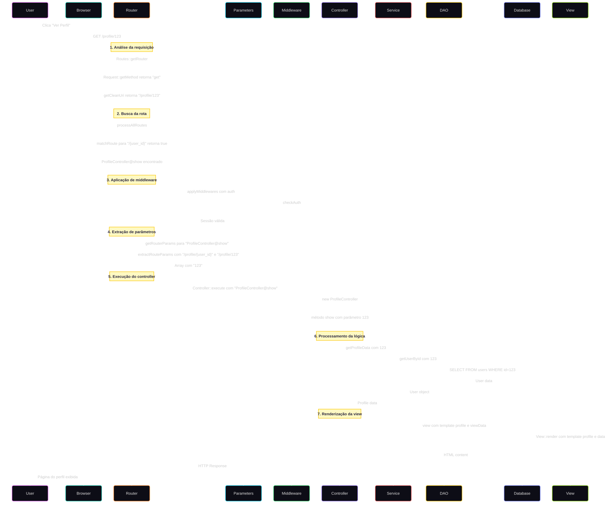
Próximos Passos
Na próxima seção, vamos ver como o Controller recebe essas informações do Router e processa a lógica de negócio.
Capítulo 8 - MVC (Model-View-Controller)
8.2.2. Controllers: Coordenação e Orquestração
No capítulo anterior (8.2), vimos como o sistema de roteamento analisa URLs, aplica middlewares e identifica qual controller deve ser executado. Agora vamos entender como o Controller atua como orquestrador central, coordenando a interação entre requisições HTTP, lógica de negócio e apresentação de dados.
Objetivos de aprendizagem
- Entender o fluxo "Controller::execute()" e como parâmetros da rota chegam ao método
- Escrever controllers enxutos que apenas orquestram o fluxo de dados
- Aplicar padrões de organização e boas práticas em controllers
Pré‑requisitos
- Entender o roteamento (8.2) e como ele seleciona "controller@method"
- Familiaridade com a ideia de Services (aprofundaremos em 8.5)
Do Roteamento à Execução
Recapitulando o fluxo do capítulo anterior: após o Router processar "GET /profile/123", ele identifica que deve executar "site\ProfileController@show" com parâmetro "[123]".
Agora veremos como o sistema executa essa informação através da classe "Controller":
// t08-mvc/core/mvc/Router.php (final do dispatch)
try {
Controller::execute($result['controller']); // "site\ProfileController@show"
} catch (Exception $e) {
Response::errorView(500);
}
Anatomia do Controller::execute()
O método "Controller::execute()" é responsável por transformar a string "site\ProfileController@show" em uma chamada de método real:
// t08-mvc/core/mvc/Controller.php
public static function execute(string $router): void
{
// 1. Valida formato da rota
self::validateRouteFormat($router); // Deve conter '@'
// 2. Separa controller e método
list($controller, $method) = explode('@', $router);
// $controller = "site\ProfileController"
// $method = "show"
// 3. Constrói namespace completo
$className = "src\\controllers\\" . $controller;
// $className = "src\controllers\site\ProfileController"
// 4. Valida se classe existe
self::classExists($className);
// 5. Instancia o controller
$controllerInstance = new $className();
// 6. Valida se método existe
self::methodExists($controllerInstance, $method, $className);
// 7. Extrai parâmetros da rota
$params = Parameters::getRouterParams($router); // [123]
// 8. Executa método com parâmetros
call_user_func_array([$controllerInstance, $method], $params);
// ProfileController->show(123)
}
Fluxo Detalhado de Execução
Vamos acompanhar cada etapa do processo usando nosso exemplo GET /profile/123:
Etapa 1: Validação do Formato
// t08-mvc/core/mvc/Controller.php
private static function validateRouteFormat(string $router): void
{
if (!str_contains($router, '@')) {
throw new Exception("Formato de rota inválido! Correto: Controller@method");
}
}
O sistema verifica se a string contém o delimitador @ que separa controller do método.
Etapa 2: Construção do Namespace
// De: "site\ProfileController"
// Para: "src\controllers\site\ProfileController"
$className = "src\\controllers\\" . $controller;
O framework adiciona o namespace base src\controllers\ para localizar a classe correta.
Etapa 3: Instanciação Segura
// t08-mvc/core/mvc/Controller.php
private static function classExists(string $className): void
{
if (!class_exists($className)) {
throw new Exception("Controller {$className} não encontrado");
}
}
Antes de instanciar, valida se a classe existe para evitar erros fatais.
Etapa 4: Extração de Parâmetros
// t08-mvc/core/mvc/helpers/Parameters.php
$params = Parameters::getRouterParams($router);
// Retorna: [123] para rota /profile/{user_id}
A classe Parameters usa o mesmo algoritmo de matching do Router para extrair valores dos parâmetros dinâmicos.
Etapa 5: Invocação Dinâmica
// Equivale a: $profileController->show(123)
call_user_func_array([$controllerInstance, $method], $params);
O PHP executa dinamicamente o método com os parâmetros extraídos da URL.
Controllers na Prática
Agora que entendemos o mecanismo de execução, vamos ver como escrever controllers eficazes:
Estrutura de um Controller
// t08-mvc/src/controllers/site/ProfileController.php
class ProfileController extends BaseController
{
private ProfileService $profileService;
private FollowService $followService;
public function __construct() {
parent::__construct(); // Inicializa sessão
// Injeção de dependências
$this->profileService = new ProfileService($userDAO, $postDAO);
$this->followService = new FollowService($followDAO, $userDAO);
}
public function show(int $userId): void // ← Parâmetro da rota
{
try {
// 1. Busca dados através de services
$profile = $this->profileService->getProfileData($userId);
$posts = $this->profileService->getProfileFeed($userId);
// 2. Obtém contexto da sessão
$loggedUserId = $this->getSession('user_id', 0);
$isFollowing = $this->followService->isFollowing($userId, $loggedUserId);
// 3. Prepara dados para apresentação (ViewModels)
$profileViewModel = new ProfileData($profile, $userId, $loggedUserId, $isFollowing);
$postsViewModel = new ProfilePostsData($posts, $profile->getUsername(), $userId, $loggedUserId);
// 4. Renderiza view com dados combinados
$this->view('profile', array_merge(
$profileViewModel->getFormattedData(),
$postsViewModel->getFormattedData(),
['pageTitle' => 'Perfil de ' . $profile->getUsername()]
));
} catch (\Throwable $e) {
error_log('Profile error: ' . $e->getMessage());
$this->view('profile', ['error' => 'Erro ao carregar perfil']);
}
}
}
BaseController: Funcionalidades Compartilhadas
O BaseController fornece funcionalidades comuns para todos os controllers, como renderização de views e acesso a dados de sessão. Seus métodos são genéricos e reutilizáveis, permitindo que os controllers se concentrem na lógica de negócio. É a aplicação do princípio DRY (Don't Repeat Yourself) na arquitetura do sistema.
// t08-mvc/src/controllers/BaseController.php
abstract class BaseController
{
public function __construct() {
Session::start(); // Garante sessão ativa
}
// Renderização de views
public function view(string $view, $data = []) {
$globalData = $this->getGlobalViewData();
echo View::render($view, array_merge($globalData, $data));
}
// Dados globais para todas as views
private function getGlobalViewData(): array {
return [
'isAuthenticated' => Session::has('user_id'),
'loggedUserId' => Session::get('user_id', 0),
'loggedUsername' => Session::get('username', '')
];
}
// Redirecionamentos seguros
public function redirect(string $path): void {
Response::redirect($path);
}
// Acesso a dados de entrada
protected function input(string $key, $default = null) {
return Request::input($key, $default);
}
}
Padrão de Organização: Controller Enxuto
Controller "spaghetti" (violando boas práticas):
public function show(int $userId): void {
// Lógica de negócio no controller
$sql = "SELECT * FROM users WHERE id = ?";
$user = $this->db->query($sql, [$userId]);
// Formatação de dados no controller
$userFormatted = [
'name' => htmlspecialchars($user['name']),
'photo' => $user['photo'] ? '/uploads/' . $user['photo'] : '/default.jpg'
];
// Validação complexa no controller (deve ser feita em um Service)
if ($user['status'] === 'active' && $user['verified'] === 1) {
// lógica complexa...
}
}
Controller "enxuto" (seguindo boas práticas):
public function show(int $userId): void {
try {
// Service faz lógica de negócio
$profile = $this->profileService->getProfileData($userId);
// ViewModel faz formatação
$profileData = new ProfileData($profile, $userId, $loggedUserId);
// Controller apenas orquestra
$this->view('profile', $profileData->getFormattedData());
} catch (\Throwable $e) {
// Tratamento simples de erros
$this->handleError($e, 'profile');
}
}
Tratamento de Erros e Segurança
Validação de Parâmetros
public function show(int $userId): void {
// PHP valida tipo automaticamente
if ($userId <= 0) {
Response::errorView(400); // Bad Request
return;
}
try {
$profile = $this->profileService->getProfileData($userId);
// ... resto da lógica
} catch (UserNotFoundException $e) {
Response::errorView(404); // Not Found
}
}
Lidando com Autenticação no Controller
Com o uso de middlewares não precisamos nos preocupar em verificar a autenticação em cada controller, pois, como vimos no módulo anterior, ele intercepta as requisições antes de chegarem ao controller.
// Aplicado pelo Router antes de chegar ao controller
'profile' => [
'middleware' => ['auth'], // Verifica autenticação
'get' => [
'/{user_id}' => 'site\ProfileController@show'
]
]
Boas Práticas para Controllers
| FAÇA | NÃO FAÇA |
|---|---|
| Mantenha controllers enxutos | Lógica de negócio no controller |
| Use Services para operações complexas | Acesso direto ao banco de dados |
| Aplique ViewModels para formatação | Preparação de dados no controller |
| Trate erros de forma consistente | Ignore exceções silenciosamente |
| Valide tipos de parâmetros | Confie cegamente nos dados de entrada |
| Use injeção de dependência | Instancie classes com new hardcoded |
Próximos Passos
Com essa base sólida de controllers enxutos e bem organizados, estamos prontos para explorar o sistema de Views (8.4), que renderiza as páginas HTML de forma reutilizável.
Capítulo 8 - MVC (Model-View-Controller)
8.2.3. Views: Templates, Layouts e Components
No capítulo anterior (8.3), vimos como controllers orquestram o fluxo de dados e chamam "$this->view('profile', $viewData)" para renderizar a resposta. Agora vamos entender como o Sistema de Views transforma esses dados estruturados em interfaces HTML finais, mantendo a separação clara entre lógica de apresentação e lógica de negócio.
Objetivos de aprendizagem
- Compreender layouts, views e components e quando usar cada um
- Entender o fluxo de renderização "View::render()" e output buffering
- Renderizar dados sem "vazar" regras de negócio para a view
Pré‑requisitos
- Sistema de Controllers (8.3) e como controllers chamam views
- Conceitos de HTML, CSS e separação de responsabilidades
Do Controller à Resposta HTML
Recapitulando o fluxo do capítulo anterior: após o controller processar a lógica de negócio, ele chama "$this->view('profile', $viewData)" para renderizar a resposta.
Agora veremos como esse processo funciona internamente:
// t08-mvc/src/controllers/BaseController.php (visto em 8.3)
public function view(string $view, $data = []) {
$globalData = $this->getGlobalViewData();
$viewData = array_merge($globalData, $data);
echo View::render($view, $viewData); // Aqui acontece a magia
}
Anatomia do View::render()
O método View::render() é responsável por transformar dados em HTML usando templates PHP:
// t08-mvc/core/mvc/View.php
public static function render(string $view, $params = []): string {
// 1. Extrai parâmetros como variáveis locais
extract($params); // $user, $posts, $pageTitle ficam disponíveis
// 2. Renderiza a view específica
ob_start(); // Inicia captura de output
include __DIR__ . '/../../view/' . $view . '.php'; // profile.php
$viewContent = ob_get_clean(); // Captura HTML da view
// 3. Renderiza o layout principal
ob_start();
include __DIR__ . '/../../view/layouts/main.php'; // Layout com {{content}}
$layoutContent = ob_get_clean();
// 4. Combina view + layout
return str_replace('{{content}}', $viewContent, $layoutContent);
}
Fluxo Detalhado de Renderização
Vamos acompanhar o processo usando $this->view('profile', $viewData):
Etapa 1: Preparação de Dados
// ViewModel já preparou os dados
$viewData = [
'user' => $profileData,
'userPosts' => $postsData,
'pageTitle' => 'Perfil de João',
'pageCSS' => 'profile',
'isAuthenticated' => true,
'loggedUserId' => 123
];
Etapa 2: Extração de Variáveis
// extract($params) torna disponível na view:
<?= $pageTitle ?> // "Perfil de João"
<?= $user['name'] ?> // Dados do usuário
<?php if ($isAuthenticated): ?> // Controle de acesso
Etapa 3: Renderização da View
// t08-mvc/view/profile.php (simplificado)
<div class="profile-container">
<div class="profile-header">
<img src="<?= $user['profilePhoto'] ?>" alt="Foto de perfil">
<h1><?= htmlspecialchars($user['username']) ?></h1>
<p><?= htmlspecialchars($user['bio']) ?></p>
</div>
<div class="profile-posts">
<?php if ($userPosts['hasUserPosts']): ?>
<?php foreach ($userPosts['userPosts'] as $post): ?>
<div class="post-item">
<img src="/public/uploads/feed/<?= $post['photoUrl'] ?>" alt="Post">
<p><?= htmlspecialchars($post['description']) ?></p>
</div>
<?php endforeach; ?>
<?php else: ?>
<p><?= $userPosts['noPostsMessage'] ?></p>
<?php endif; ?>
</div>
</div>
Etapa 4: Aplicação do Layout
// t08-mvc/view/layouts/main.php
<!DOCTYPE html>
<html lang="pt-BR">
<head>
<meta charset="UTF-8">
<title><?= $pageTitle ?? 'Conex' ?></title>
<link rel="stylesheet" href="/public/css/main.css">
<?php if (isset($pageCSS)): ?>
<link rel="stylesheet" href="/public/css/<?= $pageCSS ?>.css">
<?php endif; ?>
</head>
<body>
<?php include __DIR__ . '/../components/flash.php'; ?>
<aside class="side-bar">
<!-- Menu lateral da aplicação -->
<?php if ($isAuthenticated ?? false): ?>
<a href="/profile/<?= $loggedUserId ?>">Meu Perfil</a>
<?php else: ?>
<a href="/auth/login">Entrar</a>
<?php endif; ?>
</aside>
<main class="content">
{{content}} <!-- Substituído pelo conteúdo da view -->
</main>
</body>
</html>
Organização do Sistema de Views
Estrutura de Diretórios
view/
├── layouts/ # Templates base da aplicação
│ └── main.php # Layout principal
├── components/ # Componentes reutilizáveis
│ └── flash.php # Mensagens flash
├── error/ # Views de erro
│ ├── 404.php # Página não encontrada
│ └── 500.php # Erro interno do servidor
├── profile.php # View específica do perfil
├── feed.php # View do feed principal
└── login.php # View de login
... # Outras views
Components: Reutilização de Interface
// t08-mvc/view/components/flash.php
<?php
use Conex\MiniFramework\utils\Flash;
$flashMessages = Flash::get();
?>
<?php if (!empty($flashMessages)): ?>
<div class="flash-container">
<?php foreach ($flashMessages as $type => $message): ?>
<div class="flash-message <?= $type ?>" data-flash="<?= $type ?>">
<button class="close-btn" onclick="closeFlash(this)">×</button>
<?= htmlspecialchars($message) ?>
</div>
<?php endforeach; ?>
</div>
<?php endif; ?>
Uso em layouts:
// Incluído automaticamente no layout principal
<?php include __DIR__ . '/../components/flash.php'; ?>
Renderização Sem Layout
O sistema de views permite renderizar uma view sem aplicar o layout padrão. Isso é útil para casos especiais (AJAX, emails, fragmentos):
// t08-mvc/core/mvc/View.php
public static function renderView(string $view, $params = []): string {
extract($params);
ob_start();
include __DIR__ . '/../../view/' . $view . '.php';
return ob_get_clean(); // Retorna apenas a view, sem layout
}
Segurança e Boas Práticas
Escape de Dados do Usuário
<!-- CORRETO: Sempre escape dados do usuário -->
<h1><?= htmlspecialchars($user['name']) ?></h1>
<p><?= htmlspecialchars($post['description']) ?></p>
<!-- PERIGOSO: Output direto (XSS vulnerability) -->
<h1><?= $user['name'] ?></h1>
<p><?= $post['description'] ?></p>
Validação de Existência
<!-- CORRETO: Verifica se dados existem -->
<?php if (isset($user) && !empty($user['posts'])): ?>
<div class="posts-grid">
<?php foreach ($user['posts'] as $post): ?>
<div class="post"><?= htmlspecialchars($post['title']) ?></div>
<?php endforeach; ?>
</div>
<?php else: ?>
<p>Nenhum post encontrado.</p>
<?php endif; ?>
<!-- PERIGOSO: Assume que dados existem -->
<div class="posts-grid">
<?php foreach ($user['posts'] as $post): ?>
<div class="post"><?= $post['title'] ?></div>
<?php endforeach; ?>
</div>
Separação de Responsabilidades
Lógica de negócio na view (violando MVC):
<!-- View fazendo lógica de negócio -->
<?php
$following = $followDAO->isFollowing($userId, $loggedUserId); // DAO na view
$followText = $following ? 'Deixar de seguir' : 'Seguir'; // Lógica na view
?>
<button><?= $followText ?></button>
View apenas apresentando dados preparados:
<!-- View apenas exibe dados já preparados pelo controller -->
<button data-action="<?= $user['followAction'] ?>">
<?= htmlspecialchars($user['followButtonText']) ?>
</button>
Boas Práticas para Views
| FAÇA | NÃO FAÇA |
|---|---|
| Sempre escape dados do usuário | Output direto sem sanitização |
| Use layouts para estrutura comum | Copie HTML entre views |
| Componentize elementos reutilizáveis | Duplique código de UI |
| Valide existência de variáveis | Assuma que dados existem |
| Separe lógica de apresentação | Lógica de negócio na view |
| Use output buffering corretamente | Misture echo com includes |
Próximos Passos
Com essa base sólida de views organizadas e seguras, estamos prontos para explorar como os Services (8.5) organizam nossa lógica de negócio de forma limpa e testável!
Capítulo 8 - MVC (Model-View-Controller)
8.2.4. Abstração HTTP (Request/Response)
No capítulo anterior (8.4), vimos como o Sistema de Views renderiza dados em HTML final usando "View::render()". Agora vamos compreender como o framework gerencia a comunicação HTTP entre cliente e servidor através das classes "Request" e "Response", responsáveis por capturar dados de entrada e enviar respostas padronizadas.
Objetivos de aprendizagem
- Compreender como funcionam as superglobais $_GET, $_POST e $_SERVER do PHP
- Entender geração de respostas HTTP e redirecionamentos padronizadas com Response
- Como é feita a aplicação da sanitização e validação de inputs em requisições
- Compreender o padrão Post/Redirect/Get (PRG)
Pré‑requisitos
- Sistema de Views (8.4) e como renderização produz output final
- Conceitos básicos de HTTP (métodos, headers, status codes)
- Fundamentos de segurança web (XSS, validação de entrada)
Do HTTP Bruto às Abstrações Seguras
Até agora vimos o fluxo: Roteamento -> Controller -> View -> HTML. Mas como os dados chegam ao controller? E como o HTML chega ao browser? É aqui que entram Request e Response:
Fundamentos da Arquitetura Cliente-Servidor
Quando você acessa uma página web, está participando de uma arquitetura cliente-servidor onde o browser (cliente) se comunica com o servidor web através do protocolo HTTP. Esta comunicação acontece em um ciclo bem definido que começa quando o cliente faz uma requisição.
O browser envia uma mensagem HTTP para o servidor, especificando que recurso deseja (URL), que método usar (GET, POST, etc.) e incluindo dados adicionais se necessário. Esta requisição carrega consigo todas as informações que o servidor precisa para entender o que o cliente está solicitando.
Em seguida, o servidor processa essa requisição. O servidor web recebe a mensagem HTTP, a interpreta e executa a lógica necessária, que pode incluir consultas ao banco de dados, processamento de formulários, validação de dados, ou qualquer outra operação requerida pela aplicação.
Após o processamento, o servidor responde enviando uma resposta HTTP de volta ao cliente. Esta resposta contém um código de status (como 200 para sucesso, 404 para não encontrado, ou 500 para erro interno) e o conteúdo solicitado, que pode ser HTML, JSON, imagens, ou outros tipos de dados.
Finalmente, o cliente renderiza o resultado. O browser recebe a resposta do servidor e renderiza o conteúdo para o usuário, exibindo a página web, executando JavaScript, aplicando estilos CSS, e tornando a informação visível e interativa para quem está navegando.
Como o PHP Intercepta Requisições HTTP
O PHP, rodando no servidor web, tem acesso completo às informações da requisição HTTP através de variáveis superglobais. Estas variáveis são arrays associativos que o PHP popula automaticamente quando uma requisição chega:
- $_GET: Contém parâmetros passados na URL (query string). Exemplo: "www.site.com/busca?termo=php&categoria=web" resulta em "$_GET = ['termo' => 'php', 'categoria' => 'web']"
- $_POST: Contém dados enviados através do corpo da requisição, tipicamente de formulários HTML. É usado para envio de informações sensíveis ou grandes volumes de dados
- $_SERVER: Contém metadados da requisição como método HTTP, cabeçalhos, IP do cliente, URL completa, etc.
Problemas do Acesso Direto às Superglobais
Embora seja tentador usar "$_GET['nome']" e "$_POST['email']" diretamente nos controllers, esta prática apresenta vários riscos:
Vulnerabilidades de segurança:
// PERIGOSO - vulnerável a XSS
echo "Olá " . $_POST['nome']; // Se nome = "<script>alert('hack')</script>"
Código frágil e verboso:
// RUIM - repetitivo e propenso a erros
$nome = isset($_POST['nome']) ? trim($_POST['nome']) : '';
$email = isset($_POST['email']) ? filter_var($_POST['email'], FILTER_VALIDATE_EMAIL) : '';
if (empty($nome)) {
// tratar erro...
}
Falta de consistência:
// Cada desenvolvedor faz de um jeito diferente
$id = (int)$_GET['id']; // Um faz cast
$categoria = htmlspecialchars($_GET['cat']); // Outro sanitiza
$termo = $_GET['busca']; // Outro não valida nada
Isso torna o código difícil de manter, inseguro e propenso a erros. Para resolver esses problemas, criamos abstrações que centralizam e padronizam o acesso aos dados da requisição.
As Classes Request e Response como Abstração
É aqui que entram nossas classes Request e Response como uma camada de abstração que:
1. Padroniza o acesso aos dados:
// Em vez de: $nome = $_POST['nome'] ?? '';
$nome = Request::input('nome'); // Sempre sanitizado e validado
2. Centraliza a segurança:
// Proteção automática contra XSS em todos os inputs
$bio = Request::input('bio'); // htmlspecialchars aplicado automaticamente
3. Fornece feedback claro:
// Em vez de verificação manual se campo existe
try {
$email = Request::input('email');
} catch (Exception $e) {
// Campo obrigatório não informado - feedback claro
}
4. Gerencia respostas de forma consistente:
// Em vez de: header('Location: /'); exit;
Response::redirect('/'); // Headers verificados, logs de erro automáticos
Esta abstração permite que desenvolvedores se concentrem na lógica de negócio dos controllers, enquanto as preocupações de segurança, validação e padronização ficam encapsuladas nas classes de infraestrutura. O resultado é código mais limpo, seguro e mantível.
Classe Request (Mini-Framework): Captura Segura de Dados
A classe Request abstrai e sanitiza automaticamente dados vindos de "$_POST", "$_GET" e "$_SERVER":
Detecção de Método HTTP
Esse método do Request permite identificar o tipo de requisição (GET, POST, etc.) feita pelo cliente:
// t08-mvc/core/http/Request.php
public static function getMethod(): string {
return strtolower($_SERVER['REQUEST_METHOD']);
}
Ele também pode ser usado em controllers, para verificar o método da requisição antes de processá-la, por exemplo:
// Verifica método antes de processar
if (Request::getMethod() === 'post') {
// Processar formulário
} else {
// Exibir formulário
}
Captura de Dados POST com Sanitização
O método "Request::input()" captura dados enviados via POST, aplicando sanitização para evitar ataques XSS:
// t08-mvc/core/http/Request.php
public static function input(string $input, bool $sanitize = true) {
if(self::getMethod() !== 'post') {
throw new Exception("Nao e um metodo do tipo POST");
}
$value = $_POST[$input] ?? null;
if ($value === null) {
throw new Exception("Campo {$input} nao encontrado");
}
return $sanitize ? filter_var($value, FILTER_SANITIZE_SPECIAL_CHARS) : $value;
}
Essa proteção é crucial para evitar que scripts maliciosos sejam executados no navegador do usuário.
Proteção automática contra XSS:
// Entrada perigosa: $_POST['bio'] = '<script>alert("xss")</script>'
$bio = Request::input('bio');
// Resultado: '<script>alert("xss")</script>'
// Ou sem sanitização quando necessário:
$rawContent = Request::input('content', false); // Para editores HTML
Captura de Parâmetros GET
Funciona de maneira semelhante à captura de dados POST, mas utilizando a superglobal "$_GET" para recuperar parâmetros passados diretamente na URL:
// t08-mvc/core/http/Request.php
public static function query(string $query, bool $sanitize = true) {
if(self::getMethod() !== 'get') {
throw new Exception("Nao e um metodo do tipo get");
}
$value = $_GET[$query] ?? null;
if ($value === null) {
throw new Exception("Campo {$query} nao encontrado na URL");
}
return $sanitize ? filter_var($value, FILTER_SANITIZE_SPECIAL_CHARS) : $value;
}
Exemplo de uso em controller para busca:
// URL: /feed?search=<script>&page=2
public function index($params) {
try {
$search = Request::query('search'); // "<script>"
$page = Request::query('page'); // "2"
$posts = $this->searchPosts($search, $page);
$this->view('feed/index', ['posts' => $posts]);
} catch (Exception $e) {
// Parâmetro não encontrado - usar valores padrão
$this->view('feed/index', ['posts' => $this->getAllPosts()]);
}
}
Captura de Path (Delegação ao Router)
Esse método reutiliza a lógica de extração de URI do Router, evitando duplicação de código, centralizando a responsabilidade e mantendo a consistência na extração de URIs.
// t08-mvc/core/http/Request.php
public static function getPath(): string {
return Router::getUri(); // Reutiliza lógica consolidada
}
Classe Response (Mini-Framework): Geração de Respostas Padronizadas
A classe Response gerencia todas as saídas da aplicação: páginas de erro, redirecionamentos e controle de status HTTP:
Páginas de Erro Padronizadas
// t08-mvc/core/http/Response.php
public static function errorView(int $statusCode): never {
http_response_code($statusCode);
$params = ['message' => 'Erro ' . $statusCode];
$defaultHeaders = [
404 => View::render('error/404', $params),
403 => View::render('error/403', $params),
500 => View::render('error/500', $params),
];
echo $defaultHeaders[$statusCode] ?? 'Status code ' . $statusCode . ' não mapeado';
exit; // Termina execução
}
Fluxo de tratamento de erro:
// Controller detecta erro
public function show($params) {
$postId = $params['id'];
$post = PostService::findById($postId);
if (!$post) {
Response::errorView(404); // Renderiza error/404.php e para
}
$this->view('posts/show', ['post' => $post]);
}
Sistema de Redirecionamento Seguro
Esse método do Response realiza redirecionamentos HTTP, garantindo que os headers não tenham sido enviados previamente, evitando erros de redirecionamento. Esses erros podem ocorrer, por exemplo, se houver saída de dados antes do redirecionamento, ou seja, se o corpo da resposta já tiver sido modificado.
// t08-mvc/core/http/Response.php
public static function redirect(string $url): never {
if (headers_sent($file, $line)) {
error_log("Headers already sent in $file:$line - Cannot redirect to $url");
exit;
}
header('Location: ' . $url);
exit; // Termina execução
}
Casos de uso comuns:
// Após operação bem-sucedida
public function store($params) {
$data = Request::input('title');
PostService::create($data);
Flash::success('Post criado com sucesso!');
Response::redirect('/'); // PRG
}
// Proteção de acesso
public function admin($params) {
if (!$this->isAdmin()) {
Response::redirect('/login'); // Força autenticação
}
// Conteúdo admin...
}
Padrões de Uso HTTP no Framework
Padrão POST-Redirect-GET (PRG)
O uso do padrão PRG evita reenvio de formulários ao atualizar página:
public function createPost($params) {
if (Request::getMethod() === 'get') {
// Exibe formulário
$this->view('posts/create');
return;
}
// POST - processa dados
$title = Request::input('title');
$content = Request::input('content');
try {
PostService::create(['title' => $title, 'content' => $content]);
Flash::success('Post criado!');
Response::redirect('/posts'); // GET após POST
} catch (Exception $e) {
Flash::error('Erro ao criar post');
Response::redirect('/posts/create'); // Volta ao formulário
}
}
Desse modo, o padrão PRG ajuda a manter a integridade dos dados e a experiência do usuário.
Resumo e Próximos Passos
As classes Request e Response completam a abstração HTTP do framework:
- Request: Captura segura de dados POST/GET com sanitização automática
- Response: Geração padronizada de respostas com códigos de status corretos
- Segurança: Proteção contra XSS e validação de entrada integradas
- Padrões: PRG, tratamento centralizado de erros e feedback ao usuário
No próximo capítulo (8.6), entraremos na segunda parte do capítulo 8, onde abordaremos a implementação de Services e como eles se integram à arquitetura MVC da nossa aplicação.